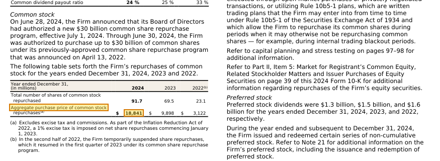
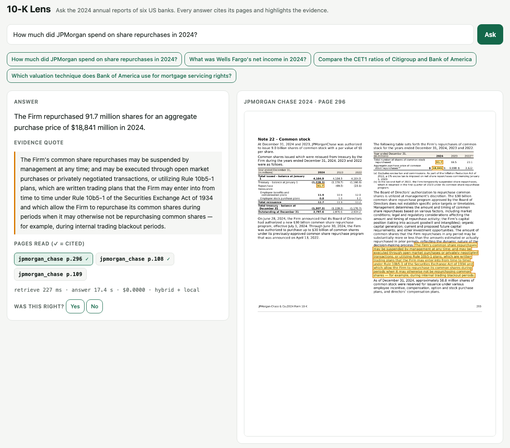

The problem, and what you'll have at the end
Analysts, auditors and credit officers spend hours finding one number in a 400-page filing, then copying it into a memo with a page reference. A chatbot that answers without showing its source is useless to them: they must be able to check every claim. So the product is not "chat with a PDF". It is: find the right page, answer only from it, and show the line.
Annual reports are the hard case the capstone describes. Half the facts sit in tables, some in charts, and the text-first habit (extract text, chunk it, embed it) loses table structure. This tutorial measures how much that matters on real filings, instead of assuming it.
| File | Step | What it does |
|---|---|---|
requirements.txt, config.py | 0 | Pinned versions; every setting in one place |
prep_data.py | 1 | Download the six 10-Ks and the labeled questions; page text; val/test split + hash |
score.py, test_score.py | 1 | nDCG@5, Recall@5, Hit@3, MRR; answer checks that need no judge model; 9 tests |
search.py, eval_retrieval.py, show.py | 2–3 | BM25, dense, vision and hybrid search behind one interface; score by content type; read the misses |
vision_index.py, compress.py, test_search.py | 3 | Embed page images as patch vectors; shrink the index; 7 tests (MaxSim, fusion, filter, evidence) |
answer.py, highlight.py, test_answer.py | 4 | Answer from pages with citations (local Qwen3.5 or Claude); draw the evidence; 5 tests |
eval_answers.py, ablate.py | 4–5 | End-to-end answer scores; paired bootstrap confidence intervals |
scan_experiment.py | 5 | Turn one report into a scan: OCR text search against vision |
app.py, static/index.html | 6 | API and web viewer with a question log and a feedback button |
ingest.py, ocr_demo.py, label.py | 2, 6 | Add your own PDFs (OCR for scans); see OCR on one page; label your own questions |
Which architecture should you use? A decision guide (v0)
The lab answers one practical question: what is the smallest stack that answers your documents correctly, and what does each correct answer cost? This is the first version of the answer. Every number carries its source, and the next round of runs replaces each estimated figure with a measured one.
measured run in this lab · published reported by the model's authors on the same benchmark · estimated worked out from Nov 2026 price lists, not yet run
| Situation | Architecture | Index needed | Cost per question | Evidence on accuracy | Effort to run |
|---|---|---|---|---|---|
| A. A few documents (under ~500 pages each), and the user knows which one to ask about | Put the whole document in the model's context; cache it for repeat questions | None | One 10-K is ~350k text tokens: Opus 5.5 ≈ $1.40, ≈ $0.08 once cached; Haiku 5.5 ≈ $0.18 (prompts over 100k tokens cost more) estimated | The model sees everything, but long contexts can miss details in the middle. Not measured yet | Very low |
| B. Many born-digital PDFs (thousands to hundreds of thousands of pages), mostly text and tables | BM25 + metadata filters (company, year) on a managed search service → top 3 pages → API model, starting with Haiku | Keyword index, no embeddings | Search ≈ $0; answer: Haiku ≈ $0.001, Opus ≈ $0.037 estimated | 10-Ks: nDCG@5 0.508, Hit@3 0.737; company filter +0.055 measured | Low |
| C. Slides, charts, infographics, complex tables | Hybrid: BM25 + vision embeddings (ColQwen3) in a vector DB → page images → API model | Both: keywords and page embeddings | Index ≈ $0.5–1 per 1,000 pages; answer as in B; plus a GPU to embed each question (hundreds of $ a month if always on) estimated | Table questions: Hit@3 +0.120 even with a small vision model measured. FDA slides: BM25 0.44 measured vs ColQwen3 0.66 published | Medium to high |
| D. Scans with no text layer | Start with OCR + BM25; add vision as in C if that falls short | Keywords on OCR text, then page embeddings | OCR ≈ 1.5 s/page on a CPU, close to free; the rest as in C estimated | Real scans: BM25 on OCR 0.32 measured vs ColQwen3 0.66 published: here vision is close to required | Medium to high |
| E. Data may not leave the organization, or more than ~40,000 questions a month | B, C or D with an open model hosted in-house (Qwen3.5 on your own GPU) | As in B, C, D | Batch ≈ $0.001/answer; an always-on GPU ≈ $1,400/month, breaking even with Opus near 38,000 questions/month estimated. On cost alone it does not beat Haiku | Not measured yet | High |
| F. Answers must be right every time (audit figures, legal) | B, C or D + Opus + cited pages and highlighted evidence + human review of key answers | As in B, C, D | ≈ $0.04/question plus review time, still far faster than searching by hand estimated | Not measured yet | Medium |
How to choose
- Small corpus: do A and build nothing.
- Large corpus: start with B. Measure it on 30–100 real questions from your organization.
- Move to C or D only where B measurably falls short on tables, charts or scans.
- Answer with Haiku by default; move up to Sonnet or Opus only where your own eval shows the gap is worth the price.
- Host a model yourself (E) for data or regulatory reasons, not to save money.
What v0 does not know yet
- Cost per correct answer for each row: so far only cost per question
- Option A (whole document in context) has not been run
- Haiku 5.5 against Opus 5.5 on the same questions
- The vision advantage in C and D rests on published numbers, not yet on runs of our own
Setup
0.1Create the project and install pinned versions
Use uv (curl -LsSf https://astral.sh/uv/install.sh | sh if you don't have it). The versions below are the ones every output on this page came from. On a Mac, also install Tesseract for the OCR step: brew install tesseract.
mkdir docqa-lab && cd docqa-lab
uv venv --python 3.12 .venv
source .venv/bin/activate# Tested on Python 3.12, macOS (Apple M1, 16 GB), Nov 2026.
torch==2.13.0
transformers==5.22.1
colpali-engine==0.3.18
peft==0.20.0
accelerate==1.15.0
pymupdf==2.1
pillow==13.0.0
numpy==2.5.4
pyarrow==26.0.1
fsspec==2026.9.0
aiohttp==3.14.5
rank-bm25==0.2.2
fastapi==0.162.2
uvicorn==0.54.0
anthropic==2.6.0uv pip install -r requirements.txt0.2One config file
Every script reads its settings from here. Change the vision resolution, the number of pages handed to the answerer, or the Claude model once, and everything follows.
"""Every setting in one place. Scripts import from here, so a change is made once."""
import os
DATA = "data"
PDF_DIR = os.path.join(DATA, "pdfs")
RUNS = "runs"
# Corpus: ViDoRe v3 Finance (English). Six 2024 10-K reports, 2,942 pages, 309 questions
# with human-checked relevant pages. CC BY 4.0 annotations; the 10-Ks are public SEC filings.
DATASET = "vidore/vidore_v3_finance_en"
DATASET_COMMIT = "main"
VAL_SIZE = 100 # the rest is test; the test file is locked by its hash
# Text retrieval
DENSE_MODEL = "sentence-transformers/all-MiniLM-L6-v2"
# Vision retrieval (late interaction). 250M parameters, runs on a laptop.
VISION_MODEL = "ModernVBERT/colmodernvbert"
VISION_EDGE = 1024 # longest edge in pixels before the processor tiles the page; 2048 is the model default
RENDER_DPI = 110 # page image for embedding and for the answerer
# Answering
TOP_K = 3 # pages handed to the answerer
LOCAL_VLM = "Qwen/Qwen3.5-0.8B"
CLAUDE_MODEL = "claude-opus-5-5"
# Claude Opus 5.5 prices per 1M tokens (Nov 2026). Images are billed as input tokens.
# Trying a cheaper model? claude-haiku-5-5 is $0.10 / $0.50; change both lines and re-run the eval.
PRICE_IN, PRICE_OUT = 4.00, 20.00
def device():
import torch
if torch.cuda.is_available():
return "cuda"
if torch.backends.mps.is_available():
return "mps"
return "cpu"python -c "import torch, pymupdf, colpali_engine"prints nothingtesseract --versionworks
colpali-enginepulls its own torch version: keep the pins together and install them in one command- On Linux with an NVIDIA GPU everything below runs faster;
config.device()picks CUDA by itself
Eval first: data, split, yardstick
Before writing a single search function, lock the questions you will be judged on and the code that scores them. Every later step reruns the same scorer, so a change is either a number up or a number down.
1.1Get real filings and questions that people checked
The data is ViDoRe v3 Finance: the 2024 10-K reports of JPMorgan Chase, Bank of America, Citigroup, Wells Fargo, Goldman Sachs and Morgan Stanley, with 309 English questions. For each question, annotators marked every page that holds the answer (score 2) or a piece of it (score 1), and wrote the answer. Questions mix plain text, tables and charts, and include comparisons across banks.
The dataset also ships 1.3 GB of page images. You don't need them: the six original PDFs are 27 MB and you render pages yourself. Parquet stores each column separately, so the script reads only the three small columns that map a page id to its PDF and page number.
"""Step 1: download the six 10-Ks and the questions, split val/test, extract each page's text layer.
data/pdfs/*.pdf the six annual reports (27 MB)
data/pages.jsonl one row per page: page_id, doc, page (1-based), text
data/val.jsonl 100 questions to tune on
data/test.jsonl 209 questions you only score in Step 7
python prep_data.py
"""
import hashlib
import json
import os
import random
import fsspec
import pyarrow.parquet as pq
import pymupdf
from config import DATA, DATASET, DATASET_COMMIT, PDF_DIR, VAL_SIZE
BASE = f"https://huggingface.co/datasets/{DATASET}/resolve/{DATASET_COMMIT}/"
DOCS = ["bank_of_america_2024", "citigroup_2024", "goldman_sachs_2024",
"jpmorgan_chase_2024", "morgan_stanley_2024", "wells_fargo_2024"]
def read_parquet(fs, path, columns=None):
with fs.open(BASE + path, "rb", block_size=2**20) as f:
return pq.ParquetFile(f).read(columns=columns).to_pylist()
def main():
os.makedirs(PDF_DIR, exist_ok=True)
fs = fsspec.filesystem("https")
for doc in DOCS:
dest = os.path.join(PDF_DIR, f"{doc}.pdf")
if not os.path.exists(dest):
with fs.open(BASE + f"pdfs/{doc}.pdf", "rb") as src, open(dest, "wb") as out:
out.write(src.read())
# The corpus parquet also holds 1.3 GB of page images. Read only the three small
# columns we need: Parquet stores columns separately, so this downloads a few MB.
corpus = []
for i in range(3):
corpus += read_parquet(fs, f"corpus/test-0000{i}-of-00003.parquet",
["corpus_id", "doc_id", "page_number_in_doc"])
page_of = {int(r["corpus_id"]): (r["doc_id"], int(r["page_number_in_doc"]) + 1) for r in corpus}
pages = []
for doc in DOCS:
pdf = pymupdf.open(os.path.join(PDF_DIR, f"{doc}.pdf"))
for i, page in enumerate(pdf):
pages.append({"page_id": f"{doc}#{i + 1}", "doc": doc, "page": i + 1,
"text": page.get_text("text")})
with open(os.path.join(DATA, "pages.jsonl"), "w") as f:
for p in pages:
f.write(json.dumps(p) + "\n")
known = {p["page_id"] for p in pages}
queries = [q for q in read_parquet(fs, "queries/test-00000-of-00001.parquet") if q["language"] == "english"]
gold = {}
for r in read_parquet(fs, "qrels/test-00000-of-00001.parquet"):
doc, page = page_of[int(r["corpus_id"])]
gold.setdefault(int(r["query_id"]), {})[f"{doc}#{page}"] = int(r["score"])
rows = []
for q in queries:
g = gold[int(q["query_id"])]
assert set(g) <= known, "a gold page is missing from the PDFs"
rows.append({"id": int(q["query_id"]), "query": q["query"], "answer": q["answer"],
"query_types": list(q["query_types"]), "content_type": list(q["content_type"]),
"format": q["query_format"], "gold": g})
rows.sort(key=lambda r: r["id"])
random.Random(0).shuffle(rows)
def write(name, part):
with open(os.path.join(DATA, name), "w") as f:
for r in part:
f.write(json.dumps(r, ensure_ascii=False) + "\n")
write("val.jsonl", rows[:VAL_SIZE])
write("test.jsonl", rows[VAL_SIZE:])
digest = hashlib.sha256(open(os.path.join(DATA, "test.jsonl"), "rb").read()).hexdigest()[:16]
empty = sum(1 for p in pages if len(p["text"].strip()) < 50)
print(f"pages {len(pages):,} ({empty} with almost no text layer) | val {VAL_SIZE} | test {len(rows) - VAL_SIZE}")
print(f"gold pages per question {sum(len(r['gold']) for r in rows) / len(rows):.1f}")
print(f"test.jsonl sha256 {digest} <- write this down; it must never change")
if __name__ == "__main__":
main()python prep_data.pypages 2,942 (33 with almost no text layer) | val 100 | test 209
gold pages per question 4.7
test.jsonl sha256 55f73d8c9557afa0 <- write this down; it must never changetest.jsonl hash differs from 55f73d8c9557afa0, the dataset changed upstream and your numbers are not comparable with this page. Note also: 33 pages have almost no text layer. Those are cover pages and charts, where text-first search is blind.1.2The yardstick
Retrieval is scored against the human page labels:
- nDCG@5: are the relevant pages in the top 5, and near the top? Fully relevant pages count double. This is the headline number, and the one ViDoRe reports.
- Recall@5: what share of the relevant pages made the top 5. Matters for comparison questions that need two banks.
- Hit@3: is at least one relevant page in the top 3, the pages the answerer will read. If this is 0, no answerer can be right.
Answers are long sentences written by people, so exact match is useless. Instead of paying a judge model, score.py checks what can be checked mechanically: yes/no questions must start with the right word, and the numbers in the reference answer must appear in the prediction (allowing "$18,841 million" to match "$18.841 billion"). Citation precision asks whether the pages the answer cites are labeled relevant.
"""The yardstick. Retrieval metrics against human-labeled pages, and answer checks that need no judge model.
gold is {page_id: 1 or 2}: 2 = the page holds the full answer, 1 = it holds a required piece.
"""
import math
import re
import string
from collections import Counter
def ndcg(ranked, gold, k=5):
dcg = sum(gold.get(p, 0) / math.log2(i + 2) for i, p in enumerate(ranked[:k]))
ideal = sorted(gold.values(), reverse=True)[:k]
idcg = sum(g / math.log2(i + 2) for i, g in enumerate(ideal))
return dcg / idcg if idcg else 0.0
def recall(ranked, gold, k=5):
return len(set(ranked[:k]) & set(gold)) / len(gold) if gold else 0.0
def hit(ranked, gold, k=5):
"""1 if any page in the top k is labeled relevant: the minimum an answerer needs."""
return float(any(p in gold for p in ranked[:k]))
def mrr(ranked, gold):
for i, p in enumerate(ranked):
if p in gold:
return 1.0 / (i + 1)
return 0.0
# ---- answers --------------------------------------------------------------
def yes_no(text):
first = re.sub(r"[^a-z]", " ", text.lower()).split()[:1]
return first[0] if first and first[0] in ("yes", "no") else None
NUM = re.compile(r"(?<![\w.])[-−]?\$?\(?\d[\d,]*(?:\.\d+)?\)?(?:\s*(?:%|percent|billion|million|thousand|bn|mm))?", re.I)
SCALE = {"billion": 1e9, "bn": 1e9, "million": 1e6, "mm": 1e6, "thousand": 1e3}
def numbers(text):
"""Every number in the text as a float, with its scale word applied. Years are left out:
they are usually restated from the question, so matching them proves nothing."""
out = []
for m in NUM.finditer(text.replace("−", "-")):
raw = m.group(0).lower()
digits = re.sub(r"[^\d.]", "", raw.split()[0] if " " in raw else raw.rstrip("%"))
digits = re.sub(r"[a-z%]", "", digits)
if not digits or digits == ".":
continue
value = float(digits)
if re.fullmatch(r"(19|20)\d\d", digits):
continue
for word, mult in SCALE.items():
if raw.endswith(word):
value *= mult
out.append(value)
return out
def same_number(a, b, tol=0.01):
"""Equal within 1%, also across a unit shift (18.8 billion vs 18,841 million vs 18,841)."""
for scale in (1, 1e3, 1e6, 1e9, 1e-3, 1e-6, 1e-9):
x = a * scale
if abs(x - b) <= tol * max(abs(b), 1e-9):
return True
return False
def number_recall(pred, gold_answer):
"""Share of the gold answer's numbers that appear in the prediction. None if gold has none."""
g = numbers(gold_answer)
if not g:
return None
p = numbers(pred)
return sum(any(same_number(x, y) for x in p) for y in g) / len(g)
def normalize(text):
text = text.lower()
text = "".join(ch for ch in text if ch not in string.punctuation)
text = re.sub(r"\b(a|an|the)\b", " ", text)
return text.split()
def token_f1(pred, gold):
p, g = normalize(pred), normalize(gold)
common = sum((Counter(p) & Counter(g)).values())
if not common:
return 0.0
precision, rec = common / len(p), common / len(g)
return 2 * precision * rec / (precision + rec)
def citation_precision(cited, gold):
"""Share of the pages the answer cites that humans marked relevant. None if nothing was cited."""
return sum(c in gold for c in cited) / len(cited) if cited else Noneimport unittest
from score import citation_precision, hit, ndcg, number_recall, numbers, recall, token_f1, yes_no
class RetrievalMetrics(unittest.TestCase):
gold = {"a#1": 2, "a#2": 1}
def test_perfect_ranking_scores_one(self):
self.assertAlmostEqual(ndcg(["a#1", "a#2", "x"], self.gold), 1.0)
def test_order_matters_for_ndcg(self):
self.assertLess(ndcg(["a#2", "a#1"], self.gold), 1.0)
self.assertGreater(ndcg(["a#2", "a#1"], self.gold), ndcg(["x", "y", "a#2"], self.gold))
def test_recall_and_hit(self):
self.assertEqual(recall(["x", "a#2"], self.gold, k=5), 0.5)
self.assertEqual(hit(["x", "y"], self.gold), 0.0)
self.assertEqual(hit(["x", "a#2"], self.gold, k=2), 1.0)
class AnswerChecks(unittest.TestCase):
def test_numbers_keep_scale_and_skip_years(self):
self.assertEqual(numbers("In 2024 it repurchased $18.841 billion, up 12.5%."), [18.841e9, 12.5])
def test_number_recall_across_units(self):
gold = "repurchases of $18.841 billion"
self.assertEqual(number_recall("They bought back $18,841 million of stock", gold), 1.0)
self.assertEqual(number_recall("They bought back 91.7 million shares", gold), 0.0)
self.assertIsNone(number_recall("Yes.", "Yes, it did."))
def test_parentheses_and_commas(self):
self.assertEqual(numbers("a loss of (1,234) and 3,000"), [1234.0, 3000.0])
def test_yes_no(self):
self.assertEqual(yes_no("Yes, JPMorgan executed more than half."), "yes")
self.assertEqual(yes_no("**No** - it did not."), "no")
self.assertIsNone(yes_no("The program was $30 billion."))
def test_token_f1(self):
self.assertEqual(token_f1("The capital is Paris", "Paris is the capital"), 1.0)
self.assertEqual(token_f1("London", "Paris"), 0.0)
def test_citation_precision(self):
self.assertEqual(citation_precision(["a#1", "x#9"], {"a#1": 2}), 0.5)
self.assertIsNone(citation_precision([], {"a#1": 2}))
if __name__ == "__main__":
unittest.main()python -m unittest test_scoretest_citation_precision (test_score.AnswerChecks.test_citation_precision) ... ok
test_number_recall_across_units (test_score.AnswerChecks.test_number_recall_across_units) ... ok
test_numbers_keep_scale_and_skip_years (test_score.AnswerChecks.test_numbers_keep_scale_and_skip_years) ... ok
test_parentheses_and_commas (test_score.AnswerChecks.test_parentheses_and_commas) ... ok
test_token_f1 (test_score.AnswerChecks.test_token_f1) ... ok
test_yes_no (test_score.AnswerChecks.test_yes_no) ... ok
test_order_matters_for_ndcg (test_score.RetrievalMetrics.test_order_matters_for_ndcg) ... ok
test_perfect_ranking_scores_one (test_score.RetrievalMetrics.test_perfect_ranking_scores_one) ... ok
test_recall_and_hit (test_score.RetrievalMetrics.test_recall_and_hit) ... ok
----------------------------------------------------------------------
Ran 9 tests in 0.001s
OKdata/val.jsonl(100) anddata/test.jsonl(209) exist- The test hash is in your README
- 9 tests pass
- Opening
--split testbefore Step 5. Tune on val only - Splitting pages instead of questions: the corpus is shared, only questions are split
Text search: the baseline you have to beat
These 10-Ks are born-digital PDFs, so every page already carries its text. Start with the cheapest thing that could work, measure it, and read where it fails.
2.1Four retrievers behind one interface
search.py holds every retriever you will build, so the eval script never changes: search(query, k) returns ranked page ids. This step uses the first two:
- BM25 scores keyword overlap. It is exact about rare terms, which in finance means line items ("noninterest income", "CET1"), tickers and numbers.
- Dense embeds meaning with MiniLM. That model reads 256 tokens at most and a 10-K page holds up to 1,500 words, so each page is cut into 200-word windows and scored by its best window. Skipping that detail silently truncates every page.
"""Four ways to find the right pages, behind one interface: search(query, k) -> [(page_id, score)].
bm25 keywords over the PDF's text layer
dense MiniLM sentence embeddings over the text layer (max over 200-word windows)
vision late interaction over page images: every query token finds its best patch (MaxSim)
hybrid reciprocal rank fusion of bm25 and vision
"""
import json
import os
import re
import numpy as np
from config import DATA, DENSE_MODEL, VISION_EDGE
# Company names as people type them. Used by --filter to keep only that company's report.
ALIASES = {
"bank_of_america_2024": ["bank of america", "bofa", "boa"],
"citigroup_2024": ["citigroup", "citi", "citibank"],
"goldman_sachs_2024": ["goldman"],
"jpmorgan_chase_2024": ["jpmorgan", "jp morgan", "jpmc", "chase"],
"morgan_stanley_2024": ["morgan stanley"],
"wells_fargo_2024": ["wells fargo"],
}
def aliases():
"""Built-in names plus any added by ingest.py for your own documents."""
path = os.path.join(DATA, "aliases.json")
return {**ALIASES, **(json.load(open(path)) if os.path.exists(path) else {})}
def companies(query):
q = query.lower()
return {doc for doc, names in aliases().items() if any(re.search(rf"\b{re.escape(n)}", q) for n in names)}
def load_pages():
return [json.loads(line) for line in open(os.path.join(DATA, "pages.jsonl"))]
def tokens(text):
return re.findall(r"[a-z0-9]+(?:\.[0-9]+)?", text.lower())
class Retriever:
def __init__(self, filter_companies=False):
self.filter = filter_companies
def scores(self, query): # -> (page_ids, np.array of scores)
raise NotImplementedError
def search(self, query, k=10):
ids, s = self.scores(query)
order = np.argsort(-s)
if self.filter and (wanted := companies(query)):
# One company: keep only its report. Several ("compare Citi and BofA"): rank each
# report separately and take turns, so one bank cannot crowd out the other.
per = {doc: [i for i in order if ids[i].split("#")[0] == doc] for doc in sorted(wanted)}
order = [i for group in zip(*per.values()) for i in group]
return [(ids[i], float(s[i])) for i in order[:k]]
class BM25(Retriever):
def __init__(self, **kw):
super().__init__(**kw)
from rank_bm25 import BM25Okapi
pages = load_pages()
self.ids = [p["page_id"] for p in pages]
self.bm25 = BM25Okapi([tokens(p["text"]) for p in pages])
def scores(self, query):
return self.ids, np.asarray(self.bm25.get_scores(tokens(query)))
class Dense(Retriever):
"""MiniLM reads at most 256 tokens, and a 10-K page holds 500-1,500 words. So each page is cut
into 200-word windows and scored by its best window."""
def __init__(self, **kw):
super().__init__(**kw)
import torch
from transformers import AutoModel, AutoTokenizer
self.torch = torch
self.tok = AutoTokenizer.from_pretrained(DENSE_MODEL)
self.model = AutoModel.from_pretrained(DENSE_MODEL).eval()
path = os.path.join(DATA, "dense.npz")
if not os.path.exists(path):
self.build(path)
z = np.load(path)
self.vecs, self.owner, self.ids = z["vecs"], z["owner"], [str(x) for x in z["ids"]]
def embed(self, texts):
with self.torch.no_grad():
b = self.tok(texts, padding=True, truncation=True, max_length=256, return_tensors="pt")
h = self.model(**b).last_hidden_state
m = b["attention_mask"].unsqueeze(-1).float()
v = (h * m).sum(1) / m.sum(1)
return self.torch.nn.functional.normalize(v, dim=-1).numpy()
def build(self, path):
pages = load_pages()
windows, owner = [], []
for i, p in enumerate(pages):
words = p["text"].split() or [""]
for s in range(0, len(words), 150):
windows.append(" ".join(words[s : s + 200]))
owner.append(i)
if s + 200 >= len(words):
break
vecs = np.concatenate([self.embed(windows[i : i + 64]) for i in range(0, len(windows), 64)])
np.savez(path, vecs=vecs.astype(np.float16), owner=np.array(owner), ids=np.array([p["page_id"] for p in pages]))
print(f"dense index: {len(windows):,} windows for {len(pages):,} pages")
def scores(self, query):
sim = self.vecs.astype(np.float32) @ self.embed([query])[0]
best = np.full(len(self.ids), -1.0)
np.maximum.at(best, self.owner, sim)
return self.ids, best
def maxsim(q, vecs, offsets):
"""Late interaction. q: (query tokens, 128). vecs: all page patches stacked (N, 128).
For each page and each query token, keep the best-matching patch; sum over query tokens."""
sim = vecs @ q.T # (N patches, query tokens)
best = np.maximum.reduceat(sim, offsets[:-1], axis=0) # (pages, query tokens)
return best.sum(axis=1)
class Vision(Retriever):
"""index: a folder under data/ written by vision_index.py (or compress.py)."""
def __init__(self, index=f"vision_{VISION_EDGE}", **kw):
super().__init__(**kw)
from vision_index import load
folder = os.path.join(DATA, index)
self.model, self.proc, self.dev = load(VISION_EDGE) # queries are text: the page edge does not matter
self.ids = json.load(open(os.path.join(folder, "page_ids.json")))
self.vecs = np.load(os.path.join(folder, "vectors.npy")).astype(np.float32)
self.offsets = np.load(os.path.join(folder, "offsets.npy"))
def embed_query(self, query):
import torch
with torch.no_grad():
b = self.proc.process_queries([query]).to(self.dev)
e = self.model(**b)[0]
return e[b["attention_mask"][0].bool()].float().cpu().numpy()
def scores(self, query):
return self.ids, maxsim(self.embed_query(query), self.vecs, self.offsets)
def rrf(rankings, k=60):
"""Reciprocal rank fusion: a page scores sum(1 / (k + rank)) over the lists it appears in."""
fused = {}
for ranking in rankings:
for rank, (pid, _) in enumerate(ranking):
fused[pid] = fused.get(pid, 0.0) + 1.0 / (k + rank + 1)
return sorted(fused.items(), key=lambda x: -x[1])
class Hybrid(Retriever):
def __init__(self, parts, **kw):
super().__init__(**kw)
self.parts = parts
def search(self, query, k=10):
return rrf([p.search(query, k=50) for p in self.parts])[:k]
def make(name, filter_companies=False, index=f"vision_{VISION_EDGE}"):
kw = {"filter_companies": filter_companies}
if name == "bm25":
return BM25(**kw)
if name == "dense":
return Dense(**kw)
if name == "vision":
return Vision(index=index, **kw)
if name == "hybrid":
return Hybrid([BM25(**kw), Vision(index=index, **kw)], **kw)
raise ValueError(name)"""Step 2-4: score a retriever on a split. Writes runs/<name>/retrieval.jsonl and prints the
headline numbers plus a breakdown by content type, the table the capstone asks for.
python eval_retrieval.py --retriever bm25 --name bm25
python eval_retrieval.py --retriever vision --name vision-1024 --index vision_1024
python eval_retrieval.py --retriever hybrid --name hybrid --filter
"""
import argparse
import json
import os
import time
import numpy as np
from config import DATA, RUNS, VISION_EDGE
from score import hit, mrr, ndcg, recall
from search import make
def summarize(rows, label):
m = {k: np.mean([r[k] for r in rows]) for k in ("ndcg5", "recall5", "hit3", "mrr")}
return f"{label:<14} n={len(rows):3d} nDCG@5 {m['ndcg5']:.3f} Recall@5 {m['recall5']:.3f} Hit@3 {m['hit3']:.3f} MRR {m['mrr']:.3f}"
def main(args):
items = [json.loads(line) for line in open(os.path.join(DATA, f"{args.split}.jsonl"))][: args.limit]
retriever = make(args.retriever, filter_companies=args.filter, index=args.index)
out_dir = os.path.join(RUNS, args.name)
os.makedirs(out_dir, exist_ok=True)
rows, latency = [], []
for item in items:
t = time.time()
ranked = [pid for pid, _ in retriever.search(item["query"], k=20)]
latency.append(time.time() - t)
g = item["gold"]
rows.append({"id": item["id"], "ranked": ranked, "ndcg5": ndcg(ranked, g, 5), "recall5": recall(ranked, g, 5),
"hit3": hit(ranked, g, 3), "mrr": mrr(ranked, g), "content_type": item["content_type"],
"query_types": item["query_types"]})
with open(os.path.join(out_dir, "retrieval.jsonl"), "w") as f:
for r in rows:
f.write(json.dumps(r) + "\n")
print(summarize(rows, args.name))
for ct in ("Text", "Table", "Chart"):
part = [r for r in rows if ct in r["content_type"]]
if part:
print(summarize(part, f" has {ct}"))
for qt in ("numerical", "multi-hop", "compare-contrast"):
part = [r for r in rows if qt in r["query_types"]]
if part:
print(summarize(part, f" {qt}"))
lat = np.array(latency) * 1000
print(f"latency per query: p50 {np.percentile(lat, 50):.0f} ms, p95 {np.percentile(lat, 95):.0f} ms")
json.dump({"name": args.name, **{k: float(np.mean([r[k] for r in rows])) for k in ("ndcg5", "recall5", "hit3", "mrr")},
"p95_ms": float(np.percentile(lat, 95))}, open(os.path.join(out_dir, "summary.json"), "w"))
if __name__ == "__main__":
p = argparse.ArgumentParser()
p.add_argument("--retriever", choices=["bm25", "dense", "vision", "hybrid"], required=True)
p.add_argument("--name", required=True)
p.add_argument("--split", default="val", help="val, test, or your own data/<name>.jsonl")
p.add_argument("--filter", action="store_true", help="search only the reports of companies named in the question")
p.add_argument("--index", default=f"vision_{VISION_EDGE}", help="vision index folder under data/")
p.add_argument("--limit", type=int)
main(p.parse_args())python eval_retrieval.py --retriever bm25 --name bm25
python eval_retrieval.py --retriever dense --name densebm25 n=100 nDCG@5 0.493 Recall@5 0.442 Hit@3 0.740 MRR 0.676
has Text n= 94 nDCG@5 0.502 Recall@5 0.450 Hit@3 0.755 MRR 0.692
has Table n= 56 nDCG@5 0.344 Recall@5 0.290 Hit@3 0.589 MRR 0.541
has Chart n= 9 nDCG@5 0.560 Recall@5 0.541 Hit@3 0.889 MRR 0.787
numerical n= 30 nDCG@5 0.471 Recall@5 0.480 Hit@3 0.667 MRR 0.581
multi-hop n= 10 nDCG@5 0.384 Recall@5 0.286 Hit@3 0.700 MRR 0.674
compare-contrast n= 20 nDCG@5 0.271 Recall@5 0.184 Hit@3 0.550 MRR 0.520
latency per query: p50 9 ms, p95 15 ms
dense n=100 nDCG@5 0.421 Recall@5 0.391 Hit@3 0.610 MRR 0.543
has Text n= 94 nDCG@5 0.419 Recall@5 0.383 Hit@3 0.606 MRR 0.542
has Table n= 56 nDCG@5 0.315 Recall@5 0.277 Hit@3 0.500 MRR 0.433
has Chart n= 9 nDCG@5 0.597 Recall@5 0.570 Hit@3 0.778 MRR 0.683
numerical n= 30 nDCG@5 0.480 Recall@5 0.485 Hit@3 0.700 MRR 0.577
multi-hop n= 10 nDCG@5 0.281 Recall@5 0.188 Hit@3 0.500 MRR 0.443
compare-contrast n= 20 nDCG@5 0.308 Recall@5 0.254 Hit@3 0.450 MRR 0.430
latency per query: p50 10 ms, p95 13 msBM25 wins clearly. A small general embedding model doesn't know that "CET1" and "Common Equity Tier 1" are the same thing, and it averages a dense table into mush. Tables are the weak spot for both: nDCG@5 drops by about a third on questions whose answer lives in a table.
2.2Use what you know: the company filter
Six banks publish near-identical sections ("Capital Risk Management", "Liquidity"). A question that names Citigroup should never get a Wells Fargo page. --filter detects the companies in the question and searches only their reports. When a question names two banks, it ranks each report separately and takes turns, so one bank can't crowd out the other. In a product, this is the "choose a document" dropdown.
python eval_retrieval.py --retriever bm25 --name bm25-filter --filterbm25-filter n=100 nDCG@5 0.532 Recall@5 0.467 Hit@3 0.760 MRR 0.699
has Text n= 94 nDCG@5 0.542 Recall@5 0.476 Hit@3 0.777 MRR 0.710
has Table n= 56 nDCG@5 0.382 Recall@5 0.307 Hit@3 0.607 MRR 0.561
has Chart n= 9 nDCG@5 0.623 Recall@5 0.569 Hit@3 0.889 MRR 0.861
numerical n= 30 nDCG@5 0.518 Recall@5 0.509 Hit@3 0.700 MRR 0.625
multi-hop n= 10 nDCG@5 0.471 Recall@5 0.312 Hit@3 0.700 MRR 0.728
compare-contrast n= 20 nDCG@5 0.299 Recall@5 0.195 Hit@3 0.550 MRR 0.550
latency per query: p50 8 ms, p95 14 ms2.3Read the misses
A score tells you how often you fail; only the failures tell you why. Read them before building anything new.
"""Read the failures of a run: where error analysis starts.
python show.py runs/bm25-filter --n 5 # questions where no relevant page made the top 3
python show.py runs/ans-local-text --n 5 # answers with the lowest scores
"""
import argparse
import json
import os
from config import DATA
def main(args):
items = {}
for split in ("val", "test"):
path = os.path.join(DATA, f"{split}.jsonl")
if os.path.exists(path):
items.update({json.loads(l)["id"]: json.loads(l) for l in open(path)})
if os.path.exists(os.path.join(args.run, "answers.jsonl")):
rows = [json.loads(l) for l in open(os.path.join(args.run, "answers.jsonl"))]
rows.sort(key=lambda r: (r["number_recall"] if r["number_recall"] is not None else r["token_f1"]))
for r in rows[: args.n]:
print(f"Q{r['id']}: {r['query']}")
print(f" GOLD : {r['gold'][:220]}")
print(f" PRED : {r['answer'][:220]}")
print(f" pages: {', '.join(p + (' *' if ok else '') for p, ok in zip(r['pages'], r['pages_relevant']))}"
f" (* = labeled relevant) cited: {r['citations']}\n")
return
rows = [json.loads(l) for l in open(os.path.join(args.run, "retrieval.jsonl"))]
misses = [r for r in rows if r["hit3"] == 0]
print(f"{len(misses)} of {len(rows)} questions have no relevant page in the top 3\n")
for r in misses[: args.n]:
item = items[r["id"]]
print(f"Q{r['id']} [{', '.join(item['content_type'])}] {item['query']}")
print(f" relevant: {', '.join(f'{p} ({s})' for p, s in item['gold'].items())}")
print(f" top 3 : {', '.join(r['ranked'][:3])}\n")
if __name__ == "__main__":
p = argparse.ArgumentParser()
p.add_argument("run")
p.add_argument("--n", type=int, default=5)
main(p.parse_args())python show.py runs/bm25-filter --n 324 of 100 questions have no relevant page in the top 3
Q195 [Table] List down the U.S. states highlighted by Bank of America in 2024 for delinquency concentration of credit cards.
relevant: bank_of_america_2024#65 (2)
top 3 : bank_of_america_2024#100, bank_of_america_2024#14, bank_of_america_2024#70
Q192 [Table, Text] What are the three noninterest income that made the total revenue stable at $101.9 billion for Bank of America in 2024?
relevant: bank_of_america_2024#93 (2)
top 3 : bank_of_america_2024#58, bank_of_america_2024#47, bank_of_america_2024#30
Q13 [Text] How many quarterly blackout periods are there for executives, directors, and notified employees at Wells Fargo?
relevant: wells_fargo_2024#342 (2)
top 3 : wells_fargo_2024#341, wells_fargo_2024#346, wells_fargo_2024#335The pattern: the question says "delinquency concentration" and the page shows a table of states with a heading that uses other words. Keyword search needs the words to be on the page. The next step tries a retriever that looks at the page instead.
2.4When there is no text layer: OCR
Scanned contracts, faxed statements and photos have no text layer at all, and text search returns nothing. The fix is OCR. This script turns a JPMorgan page into a picture, then reads it back with Tesseract through PyMuPDF, using the same function ingest.py uses in Step 6 (copy ingest.py from there first):
"""Turn a real 10-K page into a picture (a 'scan'), then read it back with OCR."""
import time
import pymupdf
from ingest import page_text
src = pymupdf.open("data/pdfs/jpmorgan_chase_2024.pdf")[107] # page 108
scan = pymupdf.open()
page = scan.new_page(width=src.rect.width, height=src.rect.height)
page.insert_image(page.rect, pixmap=src.get_pixmap(dpi=150)) # pixels only, no text layer
scan.save("scanned_page.pdf")
page = pymupdf.open("scanned_page.pdf")[0]
print("text layer characters:", len(page.get_text().strip()))
t = time.time()
text, used_ocr = page_text(page, "eng")
print(f"OCR used: {used_ocr} | {time.time() - t:.1f}s | characters: {len(text)} | finds '18,841': {'18,841' in text}")
i = text.find("Aggregate")
print("text around the table row:", " | ".join(text[i : i + 130].split("\n")))python ocr_demo.pytext layer characters: 0
OCR used: True | 1.5s | characters: 4030 | finds '18,841': True
text around the table row: Aggregate purchase price of common stock | Preferred stock dividends were $1.3 billion, $1.5 billion, and $1.6 | repurchases! | $ | 18,841The numbers survive, but look at the last line: the table row "Aggregate purchase price of common stock repurchases" is split by a sentence from the next column. OCR reads lines left to right across the page and loses the table's structure. This is exactly the damage the capstone warns about, and the reason to try vision next.
- You have
runs/bm25,runs/denseandruns/bm25-filter - You can name the content type where text search is weakest
- Truncating pages to the embedding model's limit without windows
- Judging a retriever by its average only: always split by content type
Vision search: let the model look at the page
Late interaction treats each page as an image cut into patches. Every patch gets its own vector, and so does every word of the question. A page's score is the sum, over question words, of how well its best patch matches that word. Nothing is pooled into a single vector, so a single cell of a table can still win.
3.1Embed every page as a bag of patch vectors
The capstone names ColQwen2.5 (3 billion parameters). This tutorial uses ColModernVBERT, a 250-million-parameter late-interaction model that runs on a laptop, through the colpali-engine library. The processor cuts a page into 512-pixel tiles; --edge sets the page size before tiling, which trades accuracy for time and storage:
--edge | Vectors per page | Time per page (M1) | Index for 2,942 pages |
|---|---|---|---|
| 512 (no tiling) | 89 | 0.22 s | 67 MB |
| 1024 | 355 | 1.0 s | 267 MB |
| 2048 (model default) | 1,149 | 3.6 s | ≈ 866 MB |
"""Step 3: embed every page image as a bag of patch vectors (late interaction).
Each page becomes ~90-1,200 vectors of 128 numbers, depending on --edge. Work is saved
every 64 pages, so you can stop it and run the same command again to resume.
python vision_index.py --edge 1024 # ~1 s/page on an M1, ~50 min for 2,942 pages
python vision_index.py --edge 512 # no tiling, ~0.2 s/page, 4x smaller index
"""
import argparse
import glob
import json
import os
import time
import numpy as np
import pymupdf
import torch
from PIL import Image
from config import DATA, PDF_DIR, RENDER_DPI, VISION_MODEL, device
CHUNK = 64
def render(doc, page, dpi=RENDER_DPI):
pix = pymupdf.open(os.path.join(PDF_DIR, f"{doc}.pdf"))[page - 1].get_pixmap(dpi=dpi)
return Image.frombytes("RGB", (pix.width, pix.height), pix.samples)
def load(edge):
from colpali_engine.models import ColModernVBert, ColModernVBertProcessor
dev = device()
model = ColModernVBert.from_pretrained(VISION_MODEL, torch_dtype=torch.float32, device_map=dev).eval()
proc = ColModernVBertProcessor.from_pretrained(VISION_MODEL)
ip = proc.image_processor
ip.do_image_splitting = edge > 512 # 512 = one tile, larger edges are cut into 512 px tiles
ip.size = {"longest_edge": edge}
return model, proc, dev
def main(args):
out = os.path.join(DATA, f"vision_{args.edge}")
os.makedirs(out, exist_ok=True)
pages = [json.loads(line) for line in open(os.path.join(DATA, "pages.jsonl"))]
model, proc, dev = load(args.edge)
start = time.time()
for c in range(0, len(pages), CHUNK):
path = os.path.join(out, f"chunk_{c // CHUNK:04d}.npz")
if os.path.exists(path):
continue
part = pages[c : c + CHUNK]
vecs, lens = [], []
with torch.no_grad():
for i in range(0, len(part), args.batch):
imgs = [render(p["doc"], p["page"]) for p in part[i : i + args.batch]]
batch = proc.process_images(imgs).to(dev)
emb = model(**batch).float().cpu().numpy()
mask = batch["attention_mask"].cpu().numpy().astype(bool)
for e, m in zip(emb, mask):
vecs.append(e[m].astype(np.float16)) # drop padding positions
lens.append(int(m.sum()))
np.savez(path, vecs=np.concatenate(vecs), lens=np.array(lens), ids=np.array([p["page_id"] for p in part]))
done = c + len(part)
print(f"{done:5d}/{len(pages)} pages | {np.mean(lens):.0f} vectors/page | {time.time() - start:6.0f}s", flush=True)
chunks = sorted(glob.glob(os.path.join(out, "chunk_*.npz")))
parts = [np.load(p) for p in chunks]
vecs = np.concatenate([p["vecs"] for p in parts])
lens = np.concatenate([p["lens"] for p in parts])
ids = [str(x) for p in parts for x in p["ids"]]
np.save(os.path.join(out, "vectors.npy"), vecs)
np.save(os.path.join(out, "offsets.npy"), np.concatenate([[0], np.cumsum(lens)]))
json.dump(ids, open(os.path.join(out, "page_ids.json"), "w"))
print(f"index {out}: {len(ids)} pages, {len(vecs):,} vectors, {vecs.nbytes / 1e6:.0f} MB (float16)")
if __name__ == "__main__":
p = argparse.ArgumentParser()
p.add_argument("--edge", type=int, default=1024)
p.add_argument("--batch", type=int, default=4)
main(p.parse_args())python vision_index.py --edge 1024 # ~50 min on an M1; Ctrl-C and rerun to resume
python vision_index.py --edge 512 # ~11 min 2816/2942 pages | 355 vectors/page | 2901s
2880/2942 pages | 355 vectors/page | 2961s
2942/2942 pages | 355 vectors/page | 3019s
index data/vision_1024: 2942 pages, 1,044,410 vectors, 267 MB (float16)3.2MaxSim in three lines, and its tests
The heart of late interaction is maxsim() in search.py: one matrix product of all patch vectors against the question's word vectors, then np.maximum.reduceat takes the best patch per page and per word. Over the 1-million-vector index it runs in well under a second on a CPU. The tests pin down the behavior on toy vectors you can check by hand:
import os
import unittest
import numpy as np
import pymupdf
from config import PDF_DIR
from highlight import find_boxes
from search import companies, maxsim, rrf
class LateInteraction(unittest.TestCase):
def test_maxsim_takes_best_patch_per_query_token(self):
q = np.array([[1.0, 0.0], [0.0, 1.0]]) # two query tokens
page_a = np.array([[1.0, 0.0], [0.0, 1.0]]) # matches both tokens perfectly
page_b = np.array([[0.7, 0.7], [0.1, 0.0]]) # one blurry patch
vecs = np.vstack([page_a, page_b])
scores = maxsim(q, vecs, np.array([0, 2, 4]))
np.testing.assert_allclose(scores, [2.0, 1.4])
def test_maxsim_handles_pages_of_different_lengths(self):
q = np.array([[1.0, 0.0]])
vecs = np.array([[0.2, 0.0], [0.9, 0.0], [0.5, 0.0]])
np.testing.assert_allclose(maxsim(q, vecs, np.array([0, 1, 3])), [0.2, 0.9])
class Fusion(unittest.TestCase):
def test_rrf_rewards_agreement(self):
fused = rrf([[("a", 9), ("b", 8)], [("b", 5), ("c", 4)]])
self.assertEqual(fused[0][0], "b")
self.assertEqual({p for p, _ in fused}, {"a", "b", "c"})
class Companies(unittest.TestCase):
def test_finds_one_or_several_banks(self):
self.assertEqual(companies("Did JPMorganChase execute its buyback?"), {"jpmorgan_chase_2024"})
self.assertEqual(companies("Compare Bank of America's Series B and Citigroup's Series O"),
{"bank_of_america_2024", "citigroup_2024"})
self.assertEqual(companies("total assets of the bank"), set())
def test_morgan_stanley_is_not_jpmorgan(self):
self.assertEqual(companies("Morgan Stanley wealth management revenue"), {"morgan_stanley_2024"})
class Evidence(unittest.TestCase):
page = pymupdf.open(os.path.join(PDF_DIR, "jpmorgan_chase_2024.pdf"))[107]
def test_quote_found_on_page(self):
rects, how = find_boxes(self.page, "Aggregate purchase price of common stock")
self.assertEqual(how, "quote")
self.assertGreaterEqual(len(rects), 1)
def test_falls_back_to_answer_numbers(self):
rects, how = find_boxes(self.page, "a quote that is not on this page", "It spent $18,841 million in 2024.")
self.assertEqual(how, "numbers")
self.assertGreaterEqual(len(rects), 1)
if __name__ == "__main__":
unittest.main()python -m unittest test_searchtest_finds_one_or_several_banks (test_search.Companies.test_finds_one_or_several_banks) ... ok
test_morgan_stanley_is_not_jpmorgan (test_search.Companies.test_morgan_stanley_is_not_jpmorgan) ... ok
test_falls_back_to_answer_numbers (test_search.Evidence.test_falls_back_to_answer_numbers) ... ok
test_quote_found_on_page (test_search.Evidence.test_quote_found_on_page) ... ok
test_rrf_rewards_agreement (test_search.Fusion.test_rrf_rewards_agreement) ... ok
test_maxsim_handles_pages_of_different_lengths (test_search.LateInteraction.test_maxsim_handles_pages_of_different_lengths) ... ok
test_maxsim_takes_best_patch_per_query_token (test_search.LateInteraction.test_maxsim_takes_best_patch_per_query_token) ... ok
----------------------------------------------------------------------
Ran 7 tests in 0.025s
OK3.3Vision against text, and both together
Hybrid search runs BM25 and vision and merges the two rankings with reciprocal rank fusion: a page scores 1/(60 + rank) in each list it appears in. Pages both methods like rise; neither method's raw scores need calibrating against the other.
python eval_retrieval.py --retriever vision --name vision-1024 --filter
python eval_retrieval.py --retriever vision --name vision-512 --filter --index vision_512
python eval_retrieval.py --retriever hybrid --name hybrid-filter --filter
vision-1024 n=100 nDCG@5 0.439 Recall@5 0.418 Hit@3 0.690 MRR 0.576
has Text n= 94 nDCG@5 0.442 Recall@5 0.414 Hit@3 0.691 MRR 0.584
has Table n= 56 nDCG@5 0.353 Recall@5 0.313 Hit@3 0.661 MRR 0.531
has Chart n= 9 nDCG@5 0.578 Recall@5 0.541 Hit@3 0.889 MRR 0.759
numerical n= 30 nDCG@5 0.434 Recall@5 0.450 Hit@3 0.667 MRR 0.561
multi-hop n= 10 nDCG@5 0.392 Recall@5 0.269 Hit@3 0.700 MRR 0.672
compare-contrast n= 20 nDCG@5 0.231 Recall@5 0.191 Hit@3 0.500 MRR 0.393
latency per query: p50 247 ms, p95 474 ms
vision-512 n=100 nDCG@5 0.182 Recall@5 0.157 Hit@3 0.330 MRR 0.268
has Text n= 94 nDCG@5 0.185 Recall@5 0.160 Hit@3 0.340 MRR 0.270
has Table n= 56 nDCG@5 0.138 Recall@5 0.119 Hit@3 0.304 MRR 0.227
has Chart n= 9 nDCG@5 0.139 Recall@5 0.115 Hit@3 0.444 MRR 0.257
numerical n= 30 nDCG@5 0.135 Recall@5 0.138 Hit@3 0.233 MRR 0.188
multi-hop n= 10 nDCG@5 0.111 Recall@5 0.049 Hit@3 0.300 MRR 0.278
compare-contrast n= 20 nDCG@5 0.184 Recall@5 0.129 Hit@3 0.400 MRR 0.311
latency per query: p50 57 ms, p95 112 ms
hybrid-filter n=100 nDCG@5 0.513 Recall@5 0.466 Hit@3 0.720 MRR 0.671
has Text n= 94 nDCG@5 0.523 Recall@5 0.476 Hit@3 0.723 MRR 0.670
has Table n= 56 nDCG@5 0.394 Recall@5 0.327 Hit@3 0.607 MRR 0.594
has Chart n= 9 nDCG@5 0.628 Recall@5 0.573 Hit@3 0.889 MRR 0.837
numerical n= 30 nDCG@5 0.543 Recall@5 0.527 Hit@3 0.733 MRR 0.698
multi-hop n= 10 nDCG@5 0.415 Recall@5 0.279 Hit@3 0.700 MRR 0.667
compare-contrast n= 20 nDCG@5 0.248 Recall@5 0.195 Hit@3 0.450 MRR 0.396
latency per query: p50 245 ms, p95 384 mspython ablate.py runs/bm25-filter runs/vision-1024 runs/vision-512 runs/hybrid-filterndcg5 on 100 shared questions, 95% bootstrap CI (1000 resamples)
run mean 95% CI Δ vs bm25-filter 95% CI of Δ
bm25-filter 0.532 [0.460, 0.601]
vision-1024 0.439 [0.369, 0.511] -0.093 [-0.159, -0.032] real
vision-512 0.182 [0.129, 0.241] -0.351 [-0.433, -0.261] real
hybrid-filter 0.513 [0.443, 0.586] -0.019 [-0.064, +0.021] could be luck3.4Make the index smaller
Late interaction stores hundreds of vectors per page, so storage grows fast: a million pages at 1024 px would need about 90 GB. Two ways to shrink it, both in compress.py. Prune drops the patches that look most like an average page (margins, white space). Pool merges similar patches within a page with k-means.
"""Step 4b: make the vision index smaller and check what it costs in accuracy.
A late-interaction index stores hundreds of vectors per page. Two ways to shrink it:
prune drop the patches that look most like "any page" (margins, white space): the vectors
closest to the corpus-wide average carry the least information.
pool merge similar patches inside a page with k-means and keep the centroids.
python compress.py --method prune --keep 0.5 # -> data/vision_1024_prune50
python compress.py --method pool --factor 3 # -> data/vision_1024_pool3
"""
import argparse
import json
import os
import numpy as np
from config import DATA, VISION_EDGE
def kmeans(x, k, iters=8, seed=0):
rng = np.random.default_rng(seed)
c = x[rng.choice(len(x), k, replace=False)]
for _ in range(iters):
assign = np.argmax(x @ c.T, axis=1) # vectors are unit length: dot product = cosine
for j in range(k):
members = x[assign == j]
if len(members):
c[j] = members.mean(0)
c /= np.linalg.norm(c, axis=1, keepdims=True) + 1e-8
return c
def main(args):
src = os.path.join(DATA, f"vision_{args.edge}")
vecs = np.load(os.path.join(src, "vectors.npy")).astype(np.float32)
offsets = np.load(os.path.join(src, "offsets.npy"))
ids = json.load(open(os.path.join(src, "page_ids.json")))
mean = vecs.mean(0)
mean /= np.linalg.norm(mean)
out_vecs, lens = [], []
for a, b in zip(offsets[:-1], offsets[1:]):
page = vecs[a:b]
if args.method == "prune":
keep = max(1, int(round(len(page) * args.keep)))
generic = page @ mean
page = page[np.sort(np.argsort(generic)[:keep])]
else:
page = kmeans(page, max(1, len(page) // args.factor))
out_vecs.append(page.astype(np.float16))
lens.append(len(page))
tag = f"prune{int(args.keep * 100)}" if args.method == "prune" else f"pool{args.factor}"
dst = os.path.join(DATA, f"vision_{args.edge}_{tag}")
os.makedirs(dst, exist_ok=True)
out = np.concatenate(out_vecs)
np.save(os.path.join(dst, "vectors.npy"), out)
np.save(os.path.join(dst, "offsets.npy"), np.concatenate([[0], np.cumsum(lens)]))
json.dump(ids, open(os.path.join(dst, "page_ids.json"), "w"))
print(f"{dst}: {len(out):,} vectors ({len(out) / len(vecs):.0%} of {len(vecs):,}), "
f"{out.nbytes / 1e6:.0f} MB vs {vecs.nbytes / 2 / 1e6:.0f} MB")
if __name__ == "__main__":
p = argparse.ArgumentParser()
p.add_argument("--edge", type=int, default=VISION_EDGE)
p.add_argument("--method", choices=["prune", "pool"], required=True)
p.add_argument("--keep", type=float, default=0.5)
p.add_argument("--factor", type=int, default=3)
main(p.parse_args())python compress.py --method prune --keep 0.5
python compress.py --method pool --factor 3
python eval_retrieval.py --retriever vision --name vision-prune50 --filter --index vision_1024_prune50
python eval_retrieval.py --retriever vision --name vision-pool3 --filter --index vision_1024_pool3
python ablate.py runs/vision-1024 runs/vision-prune50 runs/vision-pool3data/vision_1024_prune50: 523,676 vectors (50% of 1,044,410), 134 MB vs 267 MB
data/vision_1024_pool3: 347,156 vectors (33% of 1,044,410), 89 MB vs 267 MB
vision-pool3 n=100 nDCG@5 0.417 Recall@5 0.393 Hit@3 0.630 MRR 0.555
latency per query: p50 138 ms, p95 215 ms
vision-prune50 n=100 nDCG@5 0.370 Recall@5 0.376 Hit@3 0.510 MRR 0.480
latency per query: p50 162 ms, p95 267 ms
ndcg5 on 100 shared questions, 95% bootstrap CI (1000 resamples)
run mean 95% CI Δ vs vision-1024 95% CI of Δ
vision-1024 0.439 [0.371, 0.505]
vision-prune50 0.370 [0.300, 0.440] -0.070 [-0.115, -0.024] real
vision-pool3 0.417 [0.349, 0.491] -0.022 [-0.065, +0.018] could be luck- You know, with a confidence interval, whether vision helps on these filings and on which content type
- You picked an index size and can say what it costs in nDCG
- Embedding at the model's default 2048 px "because it's the default": measure the cheaper sizes first
- Comparing retrievers without the company filter on one and with it on the other
Answer from the pages, cite them, show the line
The answerer gets the top 3 pages and the question, and must return three things: the answer, the pages it used, and a short quote copied from one of them. The quote is what makes the answer checkable: highlight.py finds it on the real page and draws a box around it.
4.1Two answerers, one contract
Local runs Qwen3.5-0.8B, a small model that reads images, on your machine. Claude calls the Anthropic API with the page images as image blocks and a JSON schema for the reply (structured output), so the answer, citations and quote always parse. Pages can go in as images or as their text layer (--input text), which lets you measure what the answerer reads better.
One lesson cost a bug: small models copy ids badly. The first version labeled pages [citigroup_2024#938] and Qwen cited pages that didn't exist. Labeling them P1, P2, P3 and mapping back in code fixed it.
"""Step 5: read the retrieved pages and answer, citing pages and quoting the evidence.
Two answerers with the same contract: answer(question, pages) -> dict(answer, citations, quote, ...)
local Qwen3.5-0.8B on your laptop, free, slow, weak
claude Claude through the Anthropic API (set ANTHROPIC_API_KEY), structured JSON output
Pages go in as images (what the capstone teaches) or as their text layer (--input text), so you
can measure which one the answerer reads better.
python answer.py "Did JPMorganChase execute more than half of its $30 billion buyback?"
"""
import argparse
import base64
import io
import json
import re
import sys
import time
from config import CLAUDE_MODEL, LOCAL_VLM, PRICE_IN, PRICE_OUT, TOP_K, device
INSTRUCTIONS = """You answer questions about company annual reports (10-K filings) using ONLY the pages provided.
Each page starts with a label: P1, P2, P3.
Rules:
- If the pages do not contain the answer, say "Not found in the provided pages."
- Start yes/no questions with "Yes" or "No".
- Keep every number exactly as printed, with its unit (e.g. $18.8 billion, 12.5%).
- Cite the labels of the pages you used (P1, P2, ...).
- quote: copy one short phrase (3-12 words) exactly as it appears on a cited page, the one that best supports the answer."""
LOCAL_FORMAT = """Reply in exactly three lines:
ANSWER: <one to three sentences>
PAGES: <labels of the pages you used, like P1, P2>
QUOTE: <a short phrase copied exactly from one of those pages>"""
SCHEMA = {
"type": "object",
"properties": {
"answer": {"type": "string"},
"citations": {"type": "array", "items": {"type": "string"}},
"quote": {"type": "string"},
},
"required": ["answer", "citations", "quote"],
"additionalProperties": False,
}
def label(i, page_id):
"""Small models copy ids badly, so pages are labeled P1, P2, ... and mapped back after."""
doc, page = page_id.split("#")
return f"P{i + 1} ({doc.replace('_', ' ')}, page {page}):"
def page_text(page_id, pages_by_id):
return pages_by_id[page_id]["text"][:6000]
def parse_lines(text, allowed):
def field(name):
m = re.search(rf"^{name}:\s*(.*)$", text, re.M | re.I)
return m.group(1).strip() if m else ""
answer = field("ANSWER") or text.strip().split("\n")[0]
labels = re.findall(r"\bP(\d+)\b", field("PAGES"))
cited = [allowed[int(n) - 1] for n in labels if 0 < int(n) <= len(allowed)]
return {"answer": answer, "citations": list(dict.fromkeys(cited)), "quote": field("QUOTE").strip('"')}
class Local:
name = "local"
def __init__(self, model=LOCAL_VLM):
import torch
from transformers import AutoModelForImageTextToText, AutoProcessor
self.torch, self.dev = torch, device()
self.proc = AutoProcessor.from_pretrained(model)
self.model = AutoModelForImageTextToText.from_pretrained(model, dtype=torch.bfloat16).to(self.dev).eval()
def answer(self, question, page_ids, images=None, texts=None):
content = []
for i, pid in enumerate(page_ids):
content.append({"type": "text", "text": label(i, pid)})
if images:
content.append({"type": "image", "image": images[i]})
else:
content.append({"type": "text", "text": texts[i]})
content.append({"type": "text", "text": f"{INSTRUCTIONS}\n\n{LOCAL_FORMAT}\n\nQuestion: {question}"})
inputs = self.proc.apply_chat_template([{"role": "user", "content": content}], add_generation_prompt=True,
tokenize=True, return_dict=True, return_tensors="pt",
enable_thinking=False).to(self.dev)
t = time.time()
with self.torch.no_grad():
out = self.model.generate(**inputs, max_new_tokens=160, do_sample=False)
n_in = inputs["input_ids"].shape[1]
text = self.proc.decode(out[0][n_in:], skip_special_tokens=True)
return {**parse_lines(text, page_ids), "raw": text, "tokens_in": n_in,
"tokens_out": int(out.shape[1] - n_in), "seconds": time.time() - t, "usd": 0.0}
class Claude:
name = "claude"
def __init__(self, model=CLAUDE_MODEL):
import anthropic
self.client, self.model = anthropic.Anthropic(), model
def answer(self, question, page_ids, images=None, texts=None):
content = []
for i, pid in enumerate(page_ids):
content.append({"type": "text", "text": label(i, pid)})
if images:
buf = io.BytesIO()
images[i].save(buf, format="PNG")
data = base64.standard_b64encode(buf.getvalue()).decode("utf-8")
content.append({"type": "image", "source": {"type": "base64", "media_type": "image/png", "data": data}})
else:
content.append({"type": "text", "text": texts[i]})
content.append({"type": "text", "text": f"Question: {question}"})
t = time.time()
response = self.client.beta.messages.create(
model=self.model,
max_tokens=2000,
system=INSTRUCTIONS,
messages=[{"role": "user", "content": content}],
output_config={"effort": "low", "format": {"type": "json_schema", "schema": SCHEMA}},
betas=["server-side-fallback-2026-07-01"],
fallbacks="default", # if a safety classifier declines, the API retries on a fallback model
)
if response.stop_reason == "refusal":
data = {"answer": "Refused.", "citations": [], "quote": ""}
else:
data = json.loads(next(b.text for b in response.content if b.type == "text"))
u = response.usage
cited = [page_ids[int(n) - 1] for c in data["citations"] for n in re.findall(r"\d+", c)[:1] if 0 < int(n) <= len(page_ids)]
return {**data, "citations": list(dict.fromkeys(cited)),
"tokens_in": u.input_tokens, "tokens_out": u.output_tokens, "seconds": time.time() - t,
"usd": (u.input_tokens * PRICE_IN + u.output_tokens * PRICE_OUT) / 1e6}
def make(name):
return {"local": Local, "claude": Claude}[name]()
def main(args):
from search import load_pages, make as make_retriever
from vision_index import render
retriever = make_retriever(args.retriever, filter_companies=True)
ids = [pid for pid, _ in retriever.search(args.question, k=args.k)]
print("pages:", ", ".join(ids), file=sys.stderr)
by_id = {p["page_id"]: p for p in load_pages()}
images = [render(by_id[p]["doc"], by_id[p]["page"]) for p in ids] if args.input == "image" else None
texts = [page_text(p, by_id) for p in ids] if args.input == "text" else None
result = make(args.answerer).answer(args.question, ids, images=images, texts=texts)
print(json.dumps({k: v for k, v in result.items() if k != "raw"}, indent=1))
if __name__ == "__main__":
p = argparse.ArgumentParser()
p.add_argument("question")
p.add_argument("--answerer", default="local", choices=["local", "claude"])
p.add_argument("--retriever", default="bm25", choices=["bm25", "dense", "vision", "hybrid"])
p.add_argument("--input", default="image", choices=["image", "text"])
p.add_argument("--k", type=int, default=TOP_K)
main(p.parse_args())python answer.py "Did JPMorganChase execute more than half of its planned \$30 billion stock repurchase program by year-end?" --input text
pages: jpmorgan_chase_2024#108, jpmorgan_chase_2024#296, jpmorgan_chase_2024#42
{
"answer": "No, JPMorgan Chase did not execute more than half of its planned $30 billion stock repurchase program by year-end.",
"citations": [
"jpmorgan_chase_2024#296",
"jpmorgan_chase_2024#42"
],
"quote": "The $30 billion common share repurchase program approved by the Board of Directors does not establish specific price targets or timetables.",
"tokens_in": 3510,
"tokens_out": 69,
"seconds": 13.617004156112671,
"usd": 0.0
}The pages are right (108 and 42 are labeled relevant), but the answer is wrong: the reference says yes, $18.8 billion of the $30 billion was spent. The small model read the program size and never did the comparison. One anecdote proves nothing either way; the eval in 4.4 tells you how often this happens.
4.2Test the Claude path without a key
The test starts a tiny local server that plays the Messages API and points the SDK at it. It checks the request the SDK actually sends (image blocks in order, the JSON schema, the fallback setting) and how the reply is parsed and priced. When you add your key, the same code talks to the real API.
"""The answerers' contract, tested without a GPU or an API key.
The Claude test runs a tiny local server that plays the Messages API, so it checks the exact
request the SDK sends (image blocks, JSON schema, fallbacks) and how the reply is parsed."""
import json
import os
import threading
import unittest
from http.server import BaseHTTPRequestHandler, HTTPServer
from PIL import Image
from answer import Claude, label, parse_lines
PAGES = ["jpmorgan_chase_2024#108", "jpmorgan_chase_2024#42"]
class LocalParsing(unittest.TestCase):
def test_labels_map_back_to_page_ids(self):
out = parse_lines("ANSWER: Yes, $18.8 billion.\nPAGES: P2, P1\nQUOTE: \"Aggregate purchase price\"", PAGES)
self.assertEqual(out["citations"], ["jpmorgan_chase_2024#42", "jpmorgan_chase_2024#108"])
self.assertEqual(out["quote"], "Aggregate purchase price")
def test_out_of_range_labels_are_dropped(self):
self.assertEqual(parse_lines("ANSWER: x\nPAGES: P7", PAGES)["citations"], [])
def test_answer_without_prefix_uses_first_line(self):
self.assertEqual(parse_lines("Yes, it did.\nPAGES: P1", PAGES)["answer"], "Yes, it did.")
def test_label_names_the_document(self):
self.assertEqual(label(0, "wells_fargo_2024#12"), "P1 (wells fargo 2024, page 12):")
class FakeMessagesAPI(BaseHTTPRequestHandler):
seen = []
def do_POST(self):
body = json.loads(self.rfile.read(int(self.headers["content-length"])))
FakeMessagesAPI.seen.append((self.path, dict(self.headers), body))
reply = {"id": "msg_1", "type": "message", "role": "assistant", "model": body["model"],
"content": [{"type": "text", "text": json.dumps(
{"answer": "Yes. It repurchased $18.8 billion.", "citations": ["P1"], "quote": "Aggregate purchase price"})}],
"stop_reason": "end_turn", "stop_sequence": None,
"usage": {"input_tokens": 3000, "output_tokens": 40}}
data = json.dumps(reply).encode()
self.send_response(200)
self.send_header("content-type", "application/json")
self.send_header("content-length", str(len(data)))
self.end_headers()
self.wfile.write(data)
def log_message(self, *a):
pass
class ClaudeRequest(unittest.TestCase):
@classmethod
def setUpClass(cls):
cls.server = HTTPServer(("127.0.0.1", 0), FakeMessagesAPI)
threading.Thread(target=cls.server.serve_forever, daemon=True).start()
os.environ["ANTHROPIC_BASE_URL"] = f"http://127.0.0.1:{cls.server.server_port}"
os.environ["ANTHROPIC_API_KEY"] = "test-key"
@classmethod
def tearDownClass(cls):
cls.server.shutdown()
def test_images_schema_and_parsing(self):
res = Claude().answer("Did JPM buy back more than half?", PAGES, images=[Image.new("RGB", (40, 50))] * 2)
path, headers, body = FakeMessagesAPI.seen[-1]
self.assertTrue(path.startswith("/v1/messages"))
kinds = [b["type"] for b in body["messages"][0]["content"]]
self.assertEqual(kinds, ["text", "image", "text", "image", "text"])
self.assertEqual(body["output_config"]["format"]["type"], "json_schema")
self.assertEqual(body["fallbacks"], "default")
self.assertIn("server-side-fallback-2026-07-01", headers.get("anthropic-beta", ""))
self.assertEqual(res["citations"], ["jpmorgan_chase_2024#108"])
self.assertAlmostEqual(res["usd"], (3000 * 4.00 + 40 * 20.00) / 1e6)
if __name__ == "__main__":
unittest.main()python -m unittest test_answertest_images_schema_and_parsing (test_answer.ClaudeRequest.test_images_schema_and_parsing) ... ok
test_answer_without_prefix_uses_first_line (test_answer.LocalParsing.test_answer_without_prefix_uses_first_line) ... ok
test_label_names_the_document (test_answer.LocalParsing.test_label_names_the_document) ... ok
test_labels_map_back_to_page_ids (test_answer.LocalParsing.test_labels_map_back_to_page_ids) ... ok
test_out_of_range_labels_are_dropped (test_answer.LocalParsing.test_out_of_range_labels_are_dropped) ... ok
----------------------------------------------------------------------
Ran 5 tests in 1.478s
OKexport ANTHROPIC_API_KEY=..., then add --answerer claude to any command below. The default is Claude Opus 5.5 at low effort; config.py notes the cheaper Haiku 5.5 if you want to measure the trade-off. A page image at 110 DPI is about 1,500 input tokens, so 3 pages and the prompt are ≈ 5,000 tokens: about $0.02 per question with Opus 5.5, and about $0.0006 with Haiku 5.5.4.3Show the evidence
Born-digital PDFs know the position of every word, so finding the quote costs no model call. If the quote isn't on the page (the model paraphrased), highlight.py falls back to the numbers in the answer.
"""Step 6: show the evidence. Find the answer's quote (or its numbers) on the cited page and draw boxes.
A reviewer should never have to trust the answer: one click shows the highlighted line on the
real page. Born-digital PDFs carry exact word positions, so this costs no model call.
python highlight.py jpmorgan_chase_2024#108 "18,841" --out evidence.png
"""
import argparse
import os
import re
import pymupdf
from PIL import Image, ImageDraw
from config import PDF_DIR, RENDER_DPI
def find_boxes(page, quote, answer=""):
"""Rectangles (PDF points) for the quote, plus every number from the answer found on the page."""
quote = " ".join(quote.split())
found = []
if len(quote) >= 4:
# Try the quote as given, then with the PDF's curly apostrophe, then its first six words
# (a long quote often differs from the page by one word).
rects = []
for q in (quote, quote.replace("'", "\u2019"), " ".join(quote.split()[:6])):
rects = page.search_for(q)
if rects:
break
if rects:
found.append(("quote", rects))
nums = []
for num in re.findall(r"\d[\d,]*\.?\d*", answer):
num = num.rstrip(".,")
if len(num.replace(",", "")) >= 2 and not re.fullmatch(r"(19|20)\d\d", num):
nums += page.search_for(num)
if nums:
found.append(("numbers", nums))
return [r for _, rs in found for r in rs], "+".join(k for k, _ in found) or "none"
def evidence_image(page_id, quote, answer="", dpi=RENDER_DPI):
doc, number = page_id.split("#")
page = pymupdf.open(os.path.join(PDF_DIR, f"{doc}.pdf"))[int(number) - 1]
rects, how = find_boxes(page, quote, answer)
pix = page.get_pixmap(dpi=dpi)
img = Image.frombytes("RGB", (pix.width, pix.height), pix.samples).convert("RGBA")
layer = Image.new("RGBA", img.size, (0, 0, 0, 0))
draw = ImageDraw.Draw(layer)
k = dpi / 72 # PDF points -> pixels
for r in rects:
box = [r.x0 * k - 3, r.y0 * k - 2, r.x1 * k + 3, r.y1 * k + 2]
draw.rectangle(box, fill=(255, 214, 10, 90), outline=(214, 120, 0, 255), width=2)
return Image.alpha_composite(img, layer).convert("RGB"), len(rects), how
if __name__ == "__main__":
p = argparse.ArgumentParser()
p.add_argument("page_id")
p.add_argument("quote")
p.add_argument("--answer", default="")
p.add_argument("--out", default="evidence.png")
a = p.parse_args()
img, n, how = evidence_image(a.page_id, a.quote, a.answer)
img.save(a.out)
print(f"{n} box(es) found by {how} -> {a.out}")python highlight.py jpmorgan_chase_2024#108 "Aggregate purchase price of common stock" --answer "\$18,841 million" --out evidence.png2 box(es) found by quote+numbers -> .ref-page/out/evidence.png
4.4Score answers end to end
eval_answers.py reads the pages an earlier retrieval run found, so the answerer is the only thing that changes between runs. Run the local model on 40 val questions, once with page text and once with page images:
"""Step 5-6: answer every question in a split end to end and score the answers.
Retrieval is read from an earlier eval_retrieval.py run, so the answerer is the only thing
that changes between runs (and vision pages are not re-embedded).
python eval_answers.py --pages-from bm25-filter --name ans-local-text --input text --limit 40
python eval_answers.py --pages-from hybrid-filter --name ans-claude-image --answerer claude
"""
import argparse
import json
import os
import numpy as np
from config import DATA, RUNS, TOP_K
from highlight import evidence_image
from score import citation_precision, number_recall, token_f1, yes_no
from search import load_pages
from vision_index import render
def main(args):
items = {json.loads(l)["id"]: json.loads(l) for l in open(os.path.join(DATA, f"{args.split}.jsonl"))}
ranked = [json.loads(l) for l in open(os.path.join(RUNS, args.pages_from, "retrieval.jsonl"))][: args.limit]
by_id = {p["page_id"]: p for p in load_pages()}
from answer import make
answerer = make(args.answerer)
out_dir = os.path.join(RUNS, args.name)
os.makedirs(out_dir, exist_ok=True)
rows = []
with open(os.path.join(out_dir, "answers.jsonl"), "w") as f:
for n, r in enumerate(ranked, 1):
item, ids = items[r["id"]], r["ranked"][: args.k]
images = [render(by_id[p]["doc"], by_id[p]["page"]) for p in ids] if args.input == "image" else None
texts = [by_id[p]["text"][:6000] for p in ids] if args.input == "text" else None
res = answerer.answer(item["query"], ids, images=images, texts=texts)
gold_yn = yes_no(item["answer"]) if "boolean" in item["query_types"] else None
shown = 0
for pid in res["citations"]:
shown += evidence_image(pid, res["quote"], res["answer"])[1]
row = {"id": item["id"], "query": item["query"], "gold": item["answer"], "pages": ids,
"pages_relevant": [p in item["gold"] for p in ids], **{k: v for k, v in res.items() if k != "raw"},
"yes_no_correct": None if gold_yn is None else float(yes_no(res["answer"]) == gold_yn),
"number_recall": number_recall(res["answer"], item["answer"]),
"token_f1": token_f1(res["answer"], item["answer"]),
"citation_precision": citation_precision(res["citations"], item["gold"]),
"evidence_shown": float(shown > 0)}
rows.append(row)
f.write(json.dumps(row, ensure_ascii=False) + "\n")
print(f"{n}/{len(ranked)} f1 {np.mean([x['token_f1'] for x in rows]):.3f} | {row['seconds']:.0f}s", flush=True)
def mean(key):
vals = [x[key] for x in rows if x[key] is not None]
return (np.mean(vals), len(vals)) if vals else (float("nan"), 0)
summary = {"name": args.name, "n": len(rows)}
print(f"\n{args.name}: {len(rows)} questions, top-{args.k} pages from {args.pages_from}, input={args.input}")
for key, label in [("yes_no_correct", "yes/no accuracy"), ("number_recall", "number recall"),
("token_f1", "token F1 vs gold"), ("citation_precision", "citation precision"),
("evidence_shown", "evidence highlighted")]:
m, n = mean(key)
summary[key] = m
print(f" {label:<22} {m:.3f} (n={n})")
secs = np.array([x["seconds"] for x in rows])
cost = sum(x["usd"] for x in rows)
summary.update({"p50_s": float(np.median(secs)), "p95_s": float(np.percentile(secs, 95)), "usd_per_q": cost / len(rows)})
print(f" answer time p50 {np.median(secs):.1f}s, p95 {np.percentile(secs, 95):.1f}s | ${cost / len(rows):.4f}/question")
json.dump(summary, open(os.path.join(out_dir, "summary.json"), "w"))
if __name__ == "__main__":
p = argparse.ArgumentParser()
p.add_argument("--pages-from", required=True, help="a runs/<name> folder written by eval_retrieval.py")
p.add_argument("--name", required=True)
p.add_argument("--answerer", default="local", choices=["local", "claude"])
p.add_argument("--input", default="image", choices=["image", "text"])
p.add_argument("--split", default="val", help="val, test, or your own data/<name>.jsonl")
p.add_argument("--k", type=int, default=TOP_K)
p.add_argument("--limit", type=int)
main(p.parse_args())python eval_answers.py --pages-from hybrid-filter --name ans-local-text --input text --limit 40
python eval_answers.py --pages-from hybrid-filter --name ans-local-image --input image --limit 40
python ablate.py runs/ans-local-text runs/ans-local-image --metric number_recall1/40 f1 0.486 | 11s
20/40 f1 0.468 | 8s
40/40 f1 0.491 | 17s
ans-local-text: 40 questions, top-3 pages from hybrid-filter, input=text
yes/no accuracy 0.600 (n=10)
number recall 0.415 (n=23)
token F1 vs gold 0.491 (n=40)
citation precision 0.361 (n=36)
evidence highlighted 0.675 (n=40)
answer time p50 14.7s, p95 19.5s | $0.0000/question1/40 f1 0.438 | 23s
20/40 f1 0.390 | 22s
40/40 f1 0.410 | 29s
ans-local-image: 40 questions, top-3 pages from hybrid-filter, input=image
yes/no accuracy 0.600 (n=10)
number recall 0.339 (n=23)
token F1 vs gold 0.410 (n=40)
citation precision 0.465 (n=33)
evidence highlighted 0.675 (n=40)
answer time p50 24.1s, p95 28.2s | $0.0000/questiontoken_f1 on 40 shared questions, 95% bootstrap CI (1000 resamples)
run mean 95% CI Δ vs ans-local-text 95% CI of Δ
ans-local-text 0.491 [0.421, 0.561]
ans-local-image 0.410 [0.336, 0.484] -0.081 [-0.150, -0.010] real
run mean 95% CI Δ vs ans-local-text 95% CI of Δ
ans-local-text 0.415 [0.239, 0.579]
ans-local-image 0.339 [0.190, 0.508] -0.076 [-0.185, +0.000] could be luckThen read the worst answers. They show the two kinds of failure, and each has a different fix:
python show.py runs/ans-local-text --n 2Q80: Did Citibank's Supplementary Leverage Ratio increase from 2023 to 2024?
GOLD : No, Citibank's Supplementary Leverage Ratio decreased from 6.89% in 2023 to 6.0% in 2024.
PRED : Yes, Citibank's Supplementary Leverage Ratio increased from 5.82% in 2023 to 5.85% in 2024.
pages: citigroup_2024#46 *, citigroup_2024#45, citigroup_2024#239 * (* = labeled relevant) cited: ['citigroup_2024#45']
Q182: List the three measures used to assess Citigroup's bank capital in 2024.
GOLD : The three measures used to assess Citigroup's bank capital in 2024 are the CET1 Capital ratio, Tier 1 Capital ratio, and Total Capital ratio.
PRED : The three measures used to assess Citigroup's bank capital in 2024 are the Stress Capital Buffer (SCB), the Capital Conservation Buffer (CCB), and the Countercyclical Capital Buffer (CCB).
pages: citigroup_2024#36, citigroup_2024#5, citigroup_2024#103 (* = labeled relevant) cited: ['citigroup_2024#36', 'citigroup_2024#103']Q80 had the right pages and still read the wrong row (a Citigroup figure for a Citibank question) and got the direction wrong: a model problem, which a stronger answerer such as Claude fixes. Q182 never got a relevant page: a retrieval problem, which no answerer can fix. Count both kinds before deciding where to spend.
- All 21 tests pass:
python -m unittest test_score test_search test_answer - You have answer scores for text and image input, and you can say which the answerer reads better
- Judging the answerer on retrieval failures: check
pages_relevantbefore blaming the model - Letting the model invent page ids: map short labels back in code
- Paying a judge model before checking what a regex can check
Open the test set once, with confidence intervals
Every choice so far was made on val. Now run the chosen configurations on the 209 test questions, once, and report each difference with a 95% bootstrap confidence interval. With 209 questions, a 3-point gap can be luck.
5.1The retrieval scoreboard on test
"""Step 7: compare runs on the same questions, with 95% bootstrap confidence intervals.
The first run is the baseline; every other run gets a paired difference against it.
python ablate.py runs/test-bm25 runs/test-vision runs/test-hybrid # nDCG@5
python ablate.py runs/ans-text runs/ans-image --metric number_recall # answers
"""
import argparse
import json
import os
import random
def load(run, metric):
path = os.path.join(run, "retrieval.jsonl")
if not os.path.exists(path) or metric not in json.loads(open(path).readline()):
path = os.path.join(run, "answers.jsonl")
rows = {}
for line in open(path):
r = json.loads(line)
if r.get(metric) is not None:
rows[r["id"]] = float(r[metric])
return rows
def ci(values, rng, n=1000):
means = sorted(sum(rng.choices(values, k=len(values))) / len(values) for _ in range(n))
return means[int(0.025 * n)], means[int(0.975 * n)]
def main(args):
rng = random.Random(0)
runs = {r.rstrip("/"): load(r, args.metric) for r in args.runs}
names = list(runs)
common = sorted(set.intersection(*(set(v) for v in runs.values())))
base = names[0]
print(f"{args.metric} on {len(common)} shared questions, 95% bootstrap CI ({args.n} resamples)\n")
print(f"{'run':<34}{'mean':>8} {'95% CI':<17}{'Δ vs ' + os.path.basename(base):>18} {'95% CI of Δ'}")
for name in names:
vals = [runs[name][i] for i in common]
lo, hi = ci(vals, rng, args.n)
line = f"{os.path.basename(name):<34}{sum(vals) / len(vals):8.3f} [{lo:.3f}, {hi:.3f}]"
if name != base:
diff = [runs[name][i] - runs[base][i] for i in common]
dlo, dhi = ci(diff, rng, args.n)
verdict = "real" if dlo > 0 or dhi < 0 else "could be luck"
line += f"{sum(diff) / len(diff):+18.3f} [{dlo:+.3f}, {dhi:+.3f}] {verdict}"
print(line)
if __name__ == "__main__":
p = argparse.ArgumentParser()
p.add_argument("runs", nargs="+")
p.add_argument("--metric", default="ndcg5")
p.add_argument("--n", type=int, default=1000)
main(p.parse_args())for r in bm25 dense; do python eval_retrieval.py --retriever $r --name test-$r --split test; done
python eval_retrieval.py --retriever bm25 --name test-bm25-filter --split test --filter
python eval_retrieval.py --retriever vision --name test-vision --split test --filter
python eval_retrieval.py --retriever hybrid --name test-hybrid --split test --filter
python ablate.py runs/test-bm25 runs/test-dense runs/test-bm25-filter runs/test-vision runs/test-hybridndcg5 on 209 shared questions, 95% bootstrap CI (1000 resamples)
run mean 95% CI Δ vs test-bm25 95% CI of Δ
test-bm25 0.453 [0.406, 0.501]
test-dense 0.395 [0.351, 0.440] -0.059 [-0.113, -0.008] real
test-bm25-filter 0.508 [0.458, 0.554] +0.055 [+0.033, +0.076] real
test-vision 0.458 [0.409, 0.508] +0.005 [-0.048, +0.059] could be luck
test-hybrid 0.526 [0.481, 0.568] +0.072 [+0.037, +0.104] realtest-hybrid n=209 nDCG@5 0.526 Recall@5 0.512 Hit@3 0.794 MRR 0.680
has Text n=197 nDCG@5 0.531 Recall@5 0.512 Hit@3 0.812 MRR 0.693
has Table n=117 nDCG@5 0.450 Recall@5 0.438 Hit@3 0.778 MRR 0.630
has Chart n= 11 nDCG@5 0.399 Recall@5 0.435 Hit@3 0.727 MRR 0.624
numerical n= 71 nDCG@5 0.486 Recall@5 0.499 Hit@3 0.761 MRR 0.626
multi-hop n= 14 nDCG@5 0.441 Recall@5 0.344 Hit@3 0.929 MRR 0.631
compare-contrast n= 32 nDCG@5 0.318 Recall@5 0.320 Hit@3 0.625 MRR 0.500
latency per query: p50 142 ms, p95 242 ms5.2Stress test: what if the filing were a scan?
The capstone's case for vision rests on documents whose text layer is missing or broken. These 10-Ks have a clean one, so the comparison above favors text. To test the other case, turn the whole Bank of America report (305 pages) into pictures, read it back with OCR, and search only that report on the 94 questions it answers alone. This is a measurement on val and test together, not a tuning run, so it doesn't spoil the test set.
"""Step 5b: what if the filing were a scan? Text search then depends on OCR; vision doesn't care.
Every Bank of America page is turned into a picture and read back with Tesseract (cached, ~8 min).
Then three retrievers search only that report, on all 94 questions answered by it alone:
text layer BM25 (the digital PDF), OCR BM25 (the scan), vision, and OCR BM25 + vision.
python scan_experiment.py
"""
import json
import os
import random
import numpy as np
import pymupdf
from rank_bm25 import BM25Okapi
from config import DATA, PDF_DIR, VISION_EDGE
from ingest import page_text
from score import hit, ndcg
from search import Vision, load_pages, rrf, tokens
DOC = "bank_of_america_2024"
def ocr_pages():
path = os.path.join(DATA, f"ocr_{DOC}.jsonl")
done = {json.loads(l)["page_id"]: json.loads(l)["text"] for l in open(path)} if os.path.exists(path) else {}
pdf = pymupdf.open(os.path.join(PDF_DIR, f"{DOC}.pdf"))
with open(path, "a") as f:
for i, page in enumerate(pdf):
pid = f"{DOC}#{i + 1}"
if pid in done:
continue
scan = pymupdf.open()
p = scan.new_page(width=page.rect.width, height=page.rect.height)
p.insert_image(p.rect, pixmap=page.get_pixmap(dpi=150)) # the "scan": pixels only
done[pid] = page_text(scan[0], "eng")[0]
f.write(json.dumps({"page_id": pid, "text": done[pid]}) + "\n")
return done
def ranker(texts, ids):
bm25 = BM25Okapi([tokens(t) for t in texts])
return lambda q: [(ids[i], 0.0) for i in np.argsort(-bm25.get_scores(tokens(q)))[:50]]
def main():
pages = [p for p in load_pages() if p["doc"] == DOC]
ids = [p["page_id"] for p in pages]
ocr = ocr_pages()
questions = []
for split in ("val", "test"):
for line in open(os.path.join(DATA, f"{split}.jsonl")):
r = json.loads(line)
if {p.split("#")[0] for p in r["gold"]} == {DOC}:
questions.append(r)
vision = Vision(index=f"vision_{VISION_EDGE}")
keep = [i for i, pid in enumerate(vision.ids) if pid.startswith(DOC + "#")]
def vision_search(q):
s = vision.scores(q)[1][keep]
return [(vision.ids[keep[i]], 0.0) for i in np.argsort(-s)[:50]]
text_bm25 = ranker([p["text"] for p in pages], ids)
ocr_bm25 = ranker([ocr[i] for i in ids], ids)
systems = {"text layer BM25": text_bm25, "OCR BM25 (scan)": ocr_bm25, "vision (scan)": vision_search,
"OCR BM25 + vision": lambda q: rrf([ocr_bm25(q), vision_search(q)])}
scores = {name: [] for name in systems}
hits = {name: [] for name in systems}
for q in questions:
for name, fn in systems.items():
ranked = [p for p, _ in fn(q["query"])]
scores[name].append(ndcg(ranked, q["gold"], 5))
hits[name].append(hit(ranked, q["gold"], 3))
rng = random.Random(0)
base = scores["OCR BM25 (scan)"]
print(f"{len(questions)} questions answered by {DOC} alone; search limited to its {len(ids)} pages\n")
print(f"{'retriever':<20}{'nDCG@5':>8}{'Hit@3':>8} Δ nDCG@5 vs OCR BM25 [95% CI]")
for name in systems:
line = f"{name:<20}{np.mean(scores[name]):8.3f}{np.mean(hits[name]):8.3f}"
if name != "OCR BM25 (scan)":
d = [a - b for a, b in zip(scores[name], base)]
boots = sorted(np.mean(rng.choices(d, k=len(d))) for _ in range(1000))
line += f" {np.mean(d):+.3f} [{boots[25]:+.3f}, {boots[974]:+.3f}]"
print(line)
if __name__ == "__main__":
main()python scan_experiment.py # OCR of 305 pages takes ~8 minutes the first time, then it's cached94 questions answered by bank_of_america_2024 alone; search limited to its 305 pages
retriever nDCG@5 Hit@3 Δ nDCG@5 vs OCR BM25 [95% CI]
text layer BM25 0.571 0.787 +0.018 [+0.000, +0.036]
OCR BM25 (scan) 0.553 0.777
vision (scan) 0.455 0.745 -0.098 [-0.173, -0.025]
OCR BM25 + vision 0.574 0.819 +0.021 [-0.026, +0.069]5.3Write it up
The capstone asks for a content-type × approach matrix and an honest report. Here is the one from this run; fill yours from runs/*/summary.json:
## 10-K Lens: results on the ViDoRe v3 Finance test split
209 questions over six 2024 bank 10-Ks (2,942 pages). test.jsonl sha256: 55f73d8c9557afa0.
All runs search with the company filter unless noted. 95% paired bootstrap CIs, 1,000 resamples.
### Retrieval (nDCG@5 / Hit@3)
| Approach | All | Text | Table | Chart (n=11) | p95 latency | Index |
|---------------------------|----------------|-------|-------|--------------|-------------|---------|
| BM25, no filter | 0.453 / 0.708 | | | | 13 ms | in RAM |
| Dense MiniLM, no filter | 0.395 / 0.627 | | | | 16 ms | 9 MB |
| BM25 | 0.508 / 0.737 | 0.511 | 0.415 / 0.658 | 0.294 / 0.545 | 20 ms | in RAM |
| Vision, 1024 px | 0.458 / 0.713 | 0.453 | 0.434 / 0.744 | 0.384 / 0.818 | 225 ms | 267 MB |
| Hybrid (BM25 + vision) | 0.526 / 0.794 | 0.531 | 0.450 / 0.778 | 0.399 / 0.727 | 242 ms | 267 MB |
- Company filter vs none (BM25): +0.055 nDCG@5 [+0.033, +0.076]
- Hybrid vs BM25: +0.017 nDCG@5 [−0.014, +0.050], could be luck
- Hybrid vs BM25 on table questions (n=117): Hit@3 +0.120 [+0.026, +0.214]
- Index size (val): pooling ×3 keeps nDCG@5 within noise (−0.022) at 89 MB; pruning 50% loses 0.070; 512 px loses 0.257
### Scanned-report stress test (Bank of America, 94 questions)
OCR BM25 0.553 · text layer 0.571 · vision 0.455 · OCR BM25 + vision 0.574 (Hit@3 0.819)
### Decision
Ship hybrid search with the company filter. Next: one search per bank for comparison questions (0.32).
Limitation: one corpus (US bank 10-Ks) and a 250M-parameter vision model; a larger model (ColQwen2.5) is the next experiment.- Every Δ in your report has a confidence interval
- You can say in one sentence which retriever you ship, and why
- Running test several times and keeping the best run
- Reporting accuracy without latency and storage: half the decision is cost
Ship it, point it at your documents, and keep it improving
A POC answers questions on a laptop. A product answers them for other people, on their documents, and gets better every week. That takes three more things: a service with a viewer, a way to add new documents (including scans), and a loop that turns real questions into the next eval set.
6.1The service and the viewer
One FastAPI process loads the index and the answerer once. /api/ask returns the answer, citations, quote, timings and cost, and appends the whole record to runs/app_log.jsonl. /api/page/{id}.png renders a page with the evidence boxed. The viewer is one HTML file with no build step.
"""Step 8: serve it. One process holds the index and the answerer; a small web page asks questions,
shows the answer, and opens each cited page with the evidence highlighted.
DOCQA_RETRIEVER=hybrid DOCQA_ANSWERER=claude uvicorn app:app --port 8000
open http://localhost:8000
Every question is logged to runs/app_log.jsonl with its pages, answer, timing, cost and the
reader's feedback: that file is your production eval set in waiting (Step 10).
"""
import io
import json
import os
import time
import uuid
from fastapi import FastAPI, HTTPException
from fastapi.responses import FileResponse, Response
from pydantic import BaseModel
from answer import make as make_answerer
from config import RUNS, TOP_K
from highlight import evidence_image
from search import load_pages, make as make_retriever
from vision_index import render
RETRIEVER = os.environ.get("DOCQA_RETRIEVER", "bm25")
ANSWERER = os.environ.get("DOCQA_ANSWERER", "local")
INPUT = os.environ.get("DOCQA_INPUT", "text")
LOG = os.path.join(RUNS, "app_log.jsonl")
app = FastAPI(title="10-K Lens")
pages = {p["page_id"]: p for p in load_pages()}
retriever = make_retriever(RETRIEVER, filter_companies=True)
answerer = make_answerer(ANSWERER)
os.makedirs(RUNS, exist_ok=True)
class Ask(BaseModel):
question: str
class Feedback(BaseModel):
id: str
helpful: bool
note: str = ""
@app.get("/")
def index():
return FileResponse(os.path.join(os.path.dirname(__file__), "static", "index.html"))
@app.post("/api/ask")
def ask(req: Ask):
if not req.question.strip():
raise HTTPException(400, "Type a question first.")
t0 = time.time()
hits = retriever.search(req.question, k=TOP_K)
ids = [pid for pid, _ in hits]
t1 = time.time()
if INPUT == "image":
res = answerer.answer(req.question, ids, images=[render(pages[p]["doc"], pages[p]["page"]) for p in ids])
else:
res = answerer.answer(req.question, ids, texts=[pages[p]["text"][:6000] for p in ids])
record = {"id": uuid.uuid4().hex[:12], "at": time.strftime("%Y-%m-%dT%H:%M:%S"), "question": req.question,
"pages": ids, "answer": res["answer"], "citations": res["citations"], "quote": res["quote"],
"retrieve_ms": round((t1 - t0) * 1000), "answer_ms": round((time.time() - t1) * 1000),
"usd": res["usd"], "retriever": RETRIEVER, "answerer": ANSWERER, "input": INPUT}
with open(LOG, "a") as f:
f.write(json.dumps(record, ensure_ascii=False) + "\n")
return record
@app.get("/api/page/{page_id}.png")
def page_image(page_id: str, quote: str = "", answer: str = ""):
if page_id not in pages:
raise HTTPException(404, f"No page {page_id}")
img, _, _ = evidence_image(page_id, quote, answer)
buf = io.BytesIO()
img.save(buf, format="PNG")
return Response(buf.getvalue(), media_type="image/png")
@app.post("/api/feedback")
def feedback(fb: Feedback):
with open(LOG, "a") as f:
f.write(json.dumps({"feedback_for": fb.id, "helpful": fb.helpful, "note": fb.note}) + "\n")
return {"ok": True}<!doctype html>
<html lang="en">
<head>
<meta charset="utf-8">
<meta name="viewport" content="width=device-width, initial-scale=1">
<title>10-K Lens</title>
<style>
:root{--bg:#f5f6f4;--panel:#fff;--ink:#17201c;--muted:#5b6661;--rule:#dde2de;--accent:#14684a;--accent-soft:#e2f1ea;--hl:#d97a00;
--sans:system-ui,-apple-system,"Segoe UI",Roboto,Arial,sans-serif;--mono:ui-monospace,Menlo,Consolas,monospace}
@media (prefers-color-scheme:dark){:root{--bg:#121715;--panel:#1a211e;--ink:#e5ebe8;--muted:#9aa7a1;--rule:#2b3531;--accent:#5fd0a0;--accent-soft:#18322a;color-scheme:dark}}
*{box-sizing:border-box}
body{margin:0;background:var(--bg);color:var(--ink);font:15px/1.6 var(--sans)}
.wrap{max-width:1200px;margin:0 auto;padding:24px 16px;display:grid;gap:18px}
header{display:flex;align-items:baseline;gap:12px;flex-wrap:wrap}
h1{font-size:22px;margin:0}
.sub{color:var(--muted);font-size:13.5px}
form{display:flex;gap:8px}
input{flex:1;min-width:0;font:inherit;padding:11px 14px;border:1px solid var(--rule);border-radius:10px;background:var(--panel);color:var(--ink)}
button{font:inherit;font-weight:600;padding:10px 16px;border-radius:10px;border:1px solid var(--accent);background:var(--accent);color:var(--panel);cursor:pointer}
button.ghost{background:transparent;color:var(--accent);font-weight:500;padding:5px 10px;font-size:13px}
button:disabled{opacity:.6;cursor:wait}
.examples{display:flex;flex-wrap:wrap;gap:6px}
.grid{display:grid;grid-template-columns:minmax(0,1fr) minmax(0,1.2fr);gap:18px;align-items:start}
.card{background:var(--panel);border:1px solid var(--rule);border-radius:12px;padding:16px;display:grid;gap:12px;min-width:0}
.answer{font-size:16.5px}
.label{font-size:12px;font-weight:600;letter-spacing:.06em;text-transform:uppercase;color:var(--muted)}
.cites{display:flex;flex-wrap:wrap;gap:6px}
.cite{font-family:var(--mono);font-size:12.5px;padding:4px 9px;border-radius:7px;border:1px solid var(--rule);background:var(--bg);cursor:pointer;color:var(--ink)}
.cite.on{border-color:var(--accent);background:var(--accent-soft)}
.cite.cited::after{content:" ✓";color:var(--accent)}
blockquote{margin:0;padding:8px 12px;border-left:3px solid var(--hl);background:var(--bg);font-size:14px}
.meta{font-size:12.5px;color:var(--muted);font-family:var(--mono)}
.viewer img{width:100%;height:auto;border:1px solid var(--rule);border-radius:8px;display:block}
.empty{color:var(--muted)}
@media (max-width:860px){.grid{grid-template-columns:minmax(0,1fr)}}
</style>
</head>
<body>
<div class="wrap">
<header><h1>10-K Lens</h1><span class="sub">Ask the 2024 annual reports of six US banks. Every answer cites its pages and highlights the evidence.</span></header>
<form id="f"><input id="q" placeholder="e.g. How much did JPMorgan spend on share repurchases in 2024?" autocomplete="off"><button id="go">Ask</button></form>
<div class="examples" id="ex"></div>
<div class="grid">
<div class="card" id="left"><p class="empty">Answers appear here, with the pages they came from.</p></div>
<div class="card viewer" id="right"><p class="empty">Click a page to see it with the evidence highlighted.</p></div>
</div>
</div>
<script>
const EX=["How much did JPMorgan spend on share repurchases in 2024?","What was Wells Fargo's net income in 2024?","Compare the CET1 ratios of Citigroup and Bank of America","Which valuation technique does Bank of America use for mortgage servicing rights?"];
const $=id=>document.getElementById(id), esc=s=>String(s).replace(/[&<>"]/g,c=>({"&":"&","<":"<",">":">",'"':"""}[c]));
let last=null;
EX.forEach(t=>{const b=document.createElement("button");b.className="ghost";b.type="button";b.textContent=t;b.onclick=()=>{$("q").value=t;ask();};$("ex").appendChild(b);});
$("f").onsubmit=e=>{e.preventDefault();ask();};
const shared=new URLSearchParams(location.search).get("q"); // links like /?q=... ask on open
if(shared){$("q").value=shared;ask();}
async function ask(){
const q=$("q").value.trim(); if(!q) return;
$("go").disabled=true; $("left").innerHTML='<p class="empty">Searching the reports and reading the pages…</p>';
try{
const r=await fetch("/api/ask",{method:"POST",headers:{"Content-Type":"application/json"},body:JSON.stringify({question:q})});
if(!r.ok) throw new Error((await r.json()).detail||r.statusText);
last=await r.json(); render();
const first=last.citations[0]||last.pages[0]; if(first) show(first);
}catch(err){ $("left").innerHTML=`<p>Could not answer: ${esc(err.message)}. Check the server log.</p>`; }
finally{ $("go").disabled=false; }
}
function render(){
const pills=last.pages.map(p=>`<button type="button" class="cite ${last.citations.includes(p)?"cited":""}" data-p="${esc(p)}">${esc(p.replace("_2024#"," p."))}</button>`).join("");
$("left").innerHTML=`<span class="label">Answer</span><div class="answer">${esc(last.answer)}</div>
${last.quote?`<span class="label">Evidence quote</span><blockquote>${esc(last.quote)}</blockquote>`:""}
<span class="label">Pages read (✓ = cited)</span><div class="cites">${pills}</div>
<div class="meta">retrieve ${last.retrieve_ms} ms · answer ${(last.answer_ms/1000).toFixed(1)} s · $${last.usd.toFixed(4)} · ${esc(last.retriever)} + ${esc(last.answerer)}</div>
<div><span class="label">Was this right?</span> <button type="button" class="ghost" data-h="1">Yes</button> <button type="button" class="ghost" data-h="0">No</button> <span id="fbmsg" class="meta"></span></div>`;
document.querySelectorAll(".cite").forEach(b=>b.onclick=()=>show(b.dataset.p));
document.querySelectorAll("[data-h]").forEach(b=>b.onclick=async()=>{
await fetch("/api/feedback",{method:"POST",headers:{"Content-Type":"application/json"},body:JSON.stringify({id:last.id,helpful:b.dataset.h==="1"})});
$("fbmsg").textContent="Saved. Thank you.";});
}
function show(p){
document.querySelectorAll(".cite").forEach(b=>b.classList.toggle("on",b.dataset.p===p));
const u=`/api/page/${encodeURIComponent(p)}.png?quote=${encodeURIComponent(last.quote||"")}&answer=${encodeURIComponent(last.answer)}`;
$("right").innerHTML=`<span class="label">${esc(p.replace(/_/g," ").replace("#"," · page "))}</span><img alt="Page ${esc(p)} with evidence highlighted" src="${u}">`;
}
</script>
</body>
</html>DOCQA_RETRIEVER=hybrid DOCQA_ANSWERER=local DOCQA_INPUT=text uvicorn app:app --port 8000
# in another terminal:
curl -s localhost:8000/api/ask -H 'content-type: application/json' \
-d '{"question": "How much did JPMorgan spend on share repurchases in 2024?"}'{
"id": "0c27555bd0c9",
"at": "2026-11-09T22:50:48",
"question": "How much did JPMorgan spend on share repurchases in 2024?",
"pages": [
"jpmorgan_chase_2024#296",
"jpmorgan_chase_2024#108",
"jpmorgan_chase_2024#109"
],
"answer": "The Firm repurchased 91.7 million shares for an aggregate purchase price of $18,841 million in 2024.",
"citations": [
"jpmorgan_chase_2024#296",
"jpmorgan_chase_2024#108"
],
"quote": "The Firm's common share repurchases may be suspended by management at any time; and may be executed through open market purchases or privately negotiated transactions, or utilizing Rule 10b5-1 plans, which are written trading plans that the Firm may enter into from time to time under Rule 10b5-1 of the Securities Exchange Act of 1934 and which allow the Firm to repurchase its common shares during periods when it may otherwise not be repurchasing common shares \u2014 for example, during internal trading blackout periods.",
"retrieve_ms": 653,
"answer_ms": 17965,
"usd": 0.0,
"retriever": "hybrid",
"answerer": "local",
"input": "text"
}
6.2Your own documents, scans included
ingest.py adds a PDF: it uses the text layer where there is one and OCR where there isn't, registers the names people use for the company (so the filter finds it), and optionally embeds the pages into the vision index. For Vietnamese scans, install the language pack (brew install tesseract-lang) and pass --ocr-lang vie.
"""Step 9: add your own PDFs. Text layer first; pages without one (scans, photos) go through OCR.
python ingest.py ~/Downloads/vinamilk_2024.pdf --alias vinamilk vnm --vision
python ingest.py contract.pdf --ocr-lang vie # Vietnamese scans need: brew install tesseract-lang
The PDF is copied into data/pdfs, its pages are appended to data/pages.jsonl, its aliases to
data/aliases.json (so "--filter" finds it by name), and with --vision its pages are embedded and
added to the vision index. Re-running with the same file name replaces that document.
"""
import argparse
import json
import os
import shutil
import time
import numpy as np
import pymupdf
from config import DATA, PDF_DIR, VISION_EDGE
TESSDATA = os.environ.get("TESSDATA_PREFIX", "/opt/homebrew/share/tessdata")
def page_text(page, lang):
text = page.get_text("text")
if len(text.strip()) >= 50:
return text, False
tp = page.get_textpage_ocr(language=lang, dpi=200, full=True, tessdata=TESSDATA)
return page.get_text("text", textpage=tp), True
def main(args):
doc_id = os.path.splitext(os.path.basename(args.pdf))[0].lower().replace(" ", "_").replace("-", "_")
os.makedirs(PDF_DIR, exist_ok=True)
shutil.copy(args.pdf, os.path.join(PDF_DIR, f"{doc_id}.pdf"))
pdf = pymupdf.open(os.path.join(PDF_DIR, f"{doc_id}.pdf"))
t, new, ocr = time.time(), [], 0
for i, page in enumerate(pdf):
text, used_ocr = page_text(page, args.ocr_lang)
ocr += used_ocr
new.append({"page_id": f"{doc_id}#{i + 1}", "doc": doc_id, "page": i + 1, "text": text, "ocr": used_ocr})
path = os.path.join(DATA, "pages.jsonl")
old = [json.loads(l) for l in open(path)] if os.path.exists(path) else []
old = [p for p in old if p["doc"] != doc_id]
with open(path, "w") as f:
for p in old + new:
f.write(json.dumps(p, ensure_ascii=False) + "\n")
print(f"{doc_id}: {len(new)} pages ({ocr} needed OCR) in {time.time() - t:.1f}s")
aliases_path = os.path.join(DATA, "aliases.json")
aliases = json.load(open(aliases_path)) if os.path.exists(aliases_path) else {}
aliases[doc_id] = [a.lower() for a in (args.alias or [doc_id.replace("_", " ")])]
json.dump(aliases, open(aliases_path, "w"), indent=1)
for stale in ("dense.npz",): # the dense index is rebuilt on next use
if os.path.exists(os.path.join(DATA, stale)):
os.remove(os.path.join(DATA, stale))
if args.vision:
add_to_vision(new, args.edge)
def add_to_vision(new_pages, edge):
import torch
from vision_index import load, render
folder = os.path.join(DATA, f"vision_{edge}")
vecs = np.load(os.path.join(folder, "vectors.npy"))
offsets = np.load(os.path.join(folder, "offsets.npy"))
ids = json.load(open(os.path.join(folder, "page_ids.json")))
doc = new_pages[0]["doc"]
keep = [i for i, pid in enumerate(ids) if not pid.startswith(doc + "#")]
parts = [vecs[offsets[i] : offsets[i + 1]] for i in keep]
ids = [ids[i] for i in keep]
model, proc, dev = load(edge)
with torch.no_grad():
for p in new_pages:
batch = proc.process_images([render(p["doc"], p["page"])]).to(dev)
emb = model(**batch)[0]
parts.append(emb[batch["attention_mask"][0].bool()].float().cpu().numpy().astype(np.float16))
ids.append(p["page_id"])
np.save(os.path.join(folder, "vectors.npy"), np.concatenate(parts))
np.save(os.path.join(folder, "offsets.npy"), np.concatenate([[0], np.cumsum([len(x) for x in parts])]))
json.dump(ids, open(os.path.join(folder, "page_ids.json"), "w"))
print(f"vision index now {len(ids)} pages")
if __name__ == "__main__":
p = argparse.ArgumentParser()
p.add_argument("pdf")
p.add_argument("--alias", nargs="*", help="names people use for this document's company")
p.add_argument("--ocr-lang", default="eng")
p.add_argument("--vision", action="store_true", help="also embed the pages into the vision index")
p.add_argument("--edge", type=int, default=VISION_EDGE)
main(p.parse_args())python ingest.py scanned_page.pdf --alias "scan demo"scanned_page: 1 pages (1 needed OCR) in 1.6s
search "scan demo …" -> scanned_page#1New documents need new questions: the test set above says nothing about your contracts. label.py builds a gold set in the same format in about an hour. It shows BM25's top 8 pages with a snippet each; you mark the relevant ones and type the answer. Thirty questions are enough to catch a broken pipeline; a hundred to compare two retrievers.
"""Step 9b: build a gold set for YOUR documents, 20-50 questions, in about an hour.
For each question you type, it shows the top 8 pages from BM25 (and a snippet of each). You mark
which pages hold the answer (2 = the whole answer, 1 = part of it) and type the answer. Rows go
to data/<name>.jsonl in the same format as val/test, so every eval script works on them:
python label.py --name my_eval
python eval_retrieval.py --retriever hybrid --name mine --split my_eval --filter
"""
import argparse
import json
import os
import re
from config import DATA
from search import BM25, load_pages
def snippet(text, query, width=160):
words = [w for w in re.findall(r"\w+", query.lower()) if len(w) > 3]
low = text.lower()
hits = [low.find(w) for w in words if low.find(w) >= 0]
start = max(0, min(hits) - 40) if hits else 0
return " ".join(text[start : start + width].split())
def main(args):
bm25 = BM25(filter_companies=True)
pages = {p["page_id"]: p for p in load_pages()}
path = os.path.join(DATA, f"{args.name}.jsonl")
n = sum(1 for _ in open(path)) if os.path.exists(path) else 0
print(f"Writing to {path} ({n} rows so far). Empty question to stop.\n")
while True:
q = input("Question: ").strip()
if not q:
break
hits = bm25.search(q, k=8)
for i, (pid, _) in enumerate(hits, 1):
print(f" {i}. {pid:<28} {snippet(pages[pid]['text'], q)}")
marks = input("Relevant pages as number=score, e.g. '1=2 3=1' (or page ids like citi_2024#12=2): ").split()
gold = {}
for m in marks:
key, _, score = m.partition("=")
pid = hits[int(key) - 1][0] if key.isdigit() else key
gold[pid] = int(score or 2)
answer = input("Answer: ").strip()
kind = input("Type (numerical / boolean / extractive / compare-contrast): ").strip() or "extractive"
row = {"id": 100000 + n, "query": q, "answer": answer, "query_types": [kind], "content_type": ["Text"],
"format": "question", "gold": gold}
with open(path, "a") as f:
f.write(json.dumps(row, ensure_ascii=False) + "\n")
n += 1
print(f"Saved ({n} rows).\n")
if __name__ == "__main__":
p = argparse.ArgumentParser()
p.add_argument("--name", default="my_eval")
main(p.parse_args())python label.py --name my_eval
python eval_retrieval.py --retriever hybrid --name mine --split my_eval --filter6.3Operate it: the weekly loop
Every question, answer, timing and thumbs-up or thumbs-down is already in runs/app_log.jsonl. That file is the start of your next eval set. A routine that works:
| When | Do | Why |
|---|---|---|
| Every day | Watch p95 answer time and the share of "Not found in the provided pages" | A jump in "not found" usually means a new document type that search can't handle |
| Every week | Read every thumbs-down. Label the right pages with label.py and add the question to my_eval | Real questions beat synthetic ones; this is how the eval set grows |
| Before any change | Run eval_retrieval.py and eval_answers.py on my_eval, then ablate.py against the current version | Ship only changes whose confidence interval is above zero |
| New filing season | ingest.py each new report with --vision; keep last year's for comparison questions | Search quality depends on the index being complete |
| Every month | Sum usd in the log; compare answerers on my_eval at their price | Model prices change; your cost per correct answer should be measured, not assumed |
- The viewer answers a question and highlights the evidence
- One of your own PDFs is searchable, and you have 30 labeled questions for it
- Shipping without the log: you lose the only source of real eval questions
- Comparing a new answerer by feel instead of on
my_eval
Quick troubleshooting
| What you see | Cause | Fix |
|---|---|---|
| The process is killed while loading a model, with no error | Out of memory (actually hit: a second model loaded while the index was building) | Run one heavy job at a time; close the browser; the index build resumes where it stopped |
vision_index.py takes 3+ seconds per page | The processor's default 2048 px edge | Pass --edge 1024 or 512 |
| The local model cites pages that don't exist | Small models copy long ids badly (actually hit) | Label pages P1, P2, P3 and map back in code, as answer.py does |
falling back to its reference PyTorch implementation | Optional fast kernels for Qwen3.5 are not installed | Harmless on a Mac; on Linux + CUDA install flash-linear-attention for speed |
| Evidence is never highlighted on a scanned PDF | The quote search needs a text layer | Save the OCR text layer into the PDF (ocrmypdf) before ingesting |
A script sits at Loading weights 0% for minutes, using no CPU | transformers checks the Hugging Face Hub for a newer model and the request hangs (actually hit, twice) | After the first download, export HF_HUB_OFFLINE=1: loading then takes seconds |
prep_data.py hash differs | The dataset changed upstream | Pin DATASET_COMMIT in config.py to a fixed revision |
Cost and time
Everything above ran on a 2020 MacBook Air (M1, 16 GB) for $0. The only paid option is the Claude answerer.
| Step | What runs | Time on an M1 | Cost |
|---|---|---|---|
| 1 Eval | Download 27 MB of PDFs, extract 2,942 pages | ≈ 1 min | $0 |
| 2 Text search | BM25 + dense index, 3 evals | ≈ 5 min | $0 |
| 3 Vision search | Embed 2,942 pages at 1024 and 512 px, compression, evals | ≈ 70 min | $0 |
| 4 Answers | 80 local answers (text and image) | ≈ 40 min | $0 |
| 4 with Claude | Opus 5.5, 3 page images per question | ≈ 3–6 s per answer | ≈ $0.02 / question |
| 5 Test | 5 retrieval runs on 209 questions + OCR of one report for the scan test | ≈ 20 min | $0 |
Sources
- AI Engineering from Scratch, Capstone 04: Multimodal Document QA: the project brief this tutorial builds
- ViDoRe v3 Finance (EN) and the ViDoRe v3 paper: corpus, questions and page labels (CC BY 4.0; the 10-Ks are public SEC filings)
- ColPali (Faysse et al., 2024): late interaction over page images
- ColModernVBERT and colpali-engine: the retriever used here
- Qwen3.5-0.8B: the local answerer
- Claude vision and structured outputs: the hosted answerer
- PyMuPDF and Tesseract: rendering, word positions and OCR